File: 000500.gt.txt (if the image is defective, simply delete all Arabic text and the line will be excluded)

للغني مواش وبقر كثيرة،ولم يكن للفقير شيء إلا رخله واحدة صغيرة رباها،
File: 000501.gt.txt (if the image is defective, simply delete all Arabic text and the line will be excluded)

فشبت معه ومع أولاده ، فكانت تأكل من طعامه ، وتشرب من كأسه ، وتنام
File: 000502.gt.txt (if the image is defective, simply delete all Arabic text and the line will be excluded)
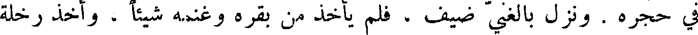
في حجره . ونزل بالغني ضيف ، فلم يأخذ من بقره وغنمه شيئا ، وأخذ رخله
File: 000503.gt.txt (if the image is defective, simply delete all Arabic text and the line will be excluded)

الفقير ، فهيأها لضيفه ، فغضب داود ، وقال : أهل أن يموت ، ويغرم بتلك
File: 000504.gt.txt (if the image is defective, simply delete all Arabic text and the line will be excluded)

الرخلة سبعة أضعاف . فقال النبي لداود : أنت الرجل الذي فعلت هذا !
File: 000505.gt.txt (if the image is defective, simply delete all Arabic text and the line will be excluded)

أن الرب إلهك يقول لك : أنا الذي جعلتك ملكا على بني إسرائيل ، بعد إن كنت
File: 000506.gt.txt (if the image is defective, simply delete all Arabic text and the line will be excluded)

راعي غنم ، أنقذتك من يدي شاول ، أعطيتك بيت إسرائيل ، وبيت يهوذا ،
File: 000507.gt.txt (if the image is defective, simply delete all Arabic text and the line will be excluded)

لأبيك طعاما ! اذهب إلى الغنم ، فخذ جديين ، فاصنع طعاما ، وقربه لأبيك ،
File: 000508.gt.txt (if the image is defective, simply delete all Arabic text and the line will be excluded)

حتى تقع عليك البركة . فقال : أخاف أن يلعنني . فقالت : إن لعنك كانت
File: 000509.gt.txt (if the image is defective, simply delete all Arabic text and the line will be excluded)

لعنتك علي . فمضى يعقوب ، واخذ جديين ، فذبحهما ، وطبخهما ، وقربهما
File: 000510.gt.txt (if the image is defective, simply delete all Arabic text and the line will be excluded)

إليه .
File: 000511.gt.txt (if the image is defective, simply delete all Arabic text and the line will be excluded)

وكان عيصو مشعر الذراع ، فأخذ يعقوب جلد الجديين ، فوضعهما على
File: 000512.gt.txt (if the image is defective, simply delete all Arabic text and the line will be excluded)

ساعديه ، فلما قرب الطعام من أبيه قال : النغمة نغمة يعقوب ، والمسحة مسحة
File: 000513.gt.txt (if the image is defective, simply delete all Arabic text and the line will be excluded)

عيصو . ثم بارك عليه ، ودعا له ، وقال له : كن رأسا على اخوتك .
File: 000514.gt.txt (if the image is defective, simply delete all Arabic text and the line will be excluded)

وجاء عيصو بصيده ، فقال له إسحاق : من قدم إلى الطعام ، فباركته ،
File: 000515.gt.txt (if the image is defective, simply delete all Arabic text and the line will be excluded)

ومباركا يكون ؟ قال : خدعني أخي يعقوب ! قال له إسحاق : قد جعلته رأسا
File: 000516.gt.txt (if the image is defective, simply delete all Arabic text and the line will be excluded)

عليك ، وعلى اخوته . ثم دعا له ، وقال : على سمية الأرض تنزل .
File: 000517.gt.txt (if the image is defective, simply delete all Arabic text and the line will be excluded)
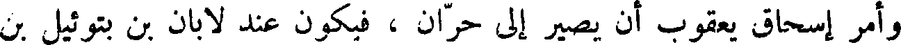
وأمر إسحاق يعقوب أن يصير إلى حران ، فيكون عند لابان بن بتوئيل بن
File: 000518.gt.txt (if the image is defective, simply delete all Arabic text and the line will be excluded)

ناحور ، أخي إبراهيم ، وخاف إسحاق عيصو عليه ، وأمره أن لا يتزوج
File: 000519.gt.txt (if the image is defective, simply delete all Arabic text and the line will be excluded)

من نساء الكنعانيين ، فصار حران إلى خاله لابان ، فكانت حياة إسحاق مائة
File: 000520.gt.txt (if the image is defective, simply delete all Arabic text and the line will be excluded)

وخمسا وثمانين سنة .
File: 000521.gt.txt (if the image is defective, simply delete all Arabic text and the line will be excluded)

يعقوب بن إسحاق
File: 000522.gt.txt (if the image is defective, simply delete all Arabic text and the line will be excluded)
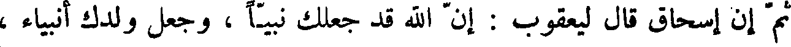
ثم أن إسحاق قال ليعقوب : أن الله جعلك نبيا ، وجعل ولدك أنبياء ،
File: 000523.gt.txt (if the image is defective, simply delete all Arabic text and the line will be excluded)

وجعل فيك الخير والبركة ؛ وأمره أن يسير إلى الفدان ، وهو موضع بالشأم ،
File: 000524.gt.txt (if the image is defective, simply delete all Arabic text and the line will be excluded)

فسار إلى الفدان ، فلما دخلها رأى امرأة معها غنم على البئر تريد أن تسقي غنمها ،
File: 000525.gt.txt (if the image is defective, simply delete all Arabic text and the line will be excluded)

وعلى رأس البئر حجر لا يرفعه إلا عدة رجال ، فسألها : من هي فقالت :
File: 000526.gt.txt (if the image is defective, simply delete all Arabic text and the line will be excluded)

أنا بنت لابان ، وكان لابان خال يعقوب ، فزحزح يعقوب الحجر ، وسقى لها ،
File: 000527.gt.txt (if the image is defective, simply delete all Arabic text and the line will be excluded)

مهلائيل بن قينان
File: 000528.gt.txt (if the image is defective, simply delete all Arabic text and the line will be excluded)

ثم قام بعد قينان مهلائيل بن قينان ، فقام في قومه بطاعة الله تعالى ، واتباع
File: 000529.gt.txt (if the image is defective, simply delete all Arabic text and the line will be excluded)
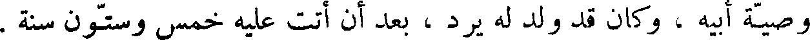
وصية أبيه ، وكان قد ولد له يرد ، بعد أن أتت عليه خمس وستون سنة .
File: 000530.gt.txt (if the image is defective, simply delete all Arabic text and the line will be excluded)

فلما دنا موت مهلائيل أوصى إلى ابنه يرد وأوصاه بجسد أدم ، ثم توفي
File: 000531.gt.txt (if the image is defective, simply delete all Arabic text and the line will be excluded)
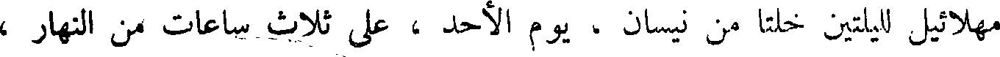
مهلائيل لليلتين خلتا من نيسان ، يوم الأحد ، على ثلاث ساعات من النهار ،
File: 000532.gt.txt (if the image is defective, simply delete all Arabic text and the line will be excluded)

وكانت حياته ثمانمائة سنة وخمسا وتسعين سنة .
File: 000533.gt.txt (if the image is defective, simply delete all Arabic text and the line will be excluded)

يرد بن مهلائيل
File: 000534.gt.txt (if the image is defective, simply delete all Arabic text and the line will be excluded)

ثم قام بعد مهلائيل يرد ، وكان رجلا مؤمنا ، كامل العمل لله ، سبحانه ،
File: 000535.gt.txt (if the image is defective, simply delete all Arabic text and the line will be excluded)
والعبادة له ، كثير الصلاة بالليل و النهار ، فزاد الله في حياته ، وكان قد ولد له
File: 000536.gt.txt (if the image is defective, simply delete all Arabic text and the line will be excluded)

اخنوخ ، بعد أن أتت عليه اثنتان وستون سنة ، وفي الأربعين ليرد تم الألف
File: 000537.gt.txt (if the image is defective, simply delete all Arabic text and the line will be excluded)
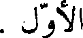
الأول .
File: 000538.gt.txt (if the image is defective, simply delete all Arabic text and the line will be excluded)

ولما مضى من حياة يرد خمسمائة سنة نقض بنو شيث العهود والمواثيق التي
File: 000539.gt.txt (if the image is defective, simply delete all Arabic text and the line will be excluded)
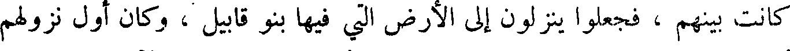
كانت بينهم ، فجعلوا ينزلون إلى الأرض التي فيها بنو قابيل ، وكان أول نزولهم
File: 000540.gt.txt (if the image is defective, simply delete all Arabic text and the line will be excluded)

أن الشيطان اتخذ شيطانين من الإنس اسم أحدهما يوبل ، و الآخر توبلقين ،
File: 000541.gt.txt (if the image is defective, simply delete all Arabic text and the line will be excluded)

فعلمهما أصناف الغناء والزمر ، فصنع يوبل المزامير و الطنابير والبرابط والصور .
File: 000542.gt.txt (if the image is defective, simply delete all Arabic text and the line will be excluded)

وصنع توبلقين الطبول والدفوف والصنوج ، ولم يكن لبني قابيل عمل يشغلهم ،
File: 000543.gt.txt (if the image is defective, simply delete all Arabic text and the line will be excluded)

و لا ذكر لهم إلا أمام الشيطان ، وكانوا يركبون المحارم و المآثم ، ويجتمعون
File: 000544.gt.txt (if the image is defective, simply delete all Arabic text and the line will be excluded)

ساروغ بن ارغو
File: 000545.gt.txt (if the image is defective, simply delete all Arabic text and the line will be excluded)
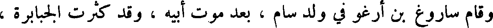
وقام ساروغ بن ارغو في ولد سام ، بعد موت أبيه وقد كثرت الجبابرة ،
File: 000546.gt.txt (if the image is defective, simply delete all Arabic text and the line will be excluded)

وعتت في الأرض . وكان في زمن ساروغ أول ما عبدت الأصنام ، وكان أول
File: 000547.gt.txt (if the image is defective, simply delete all Arabic text and the line will be excluded)

شأن الأصنام أن الناس كان إذا مات لأحدهم الميت الذي يعز عليهم من أب أو
File: 000548.gt.txt (if the image is defective, simply delete all Arabic text and the line will be excluded)

أخ أو ولد صنع صنما على صورته ، وسماه باسمه ، فلما أدرك الخلف الذي
File: 000549.gt.txt (if the image is defective, simply delete all Arabic text and the line will be excluded)

بعدهم ظنوا ، وحدثهم الشيطان ، أنه إنما صنعت هذه لتعبد ، فعبدوها ،
File: 000550.gt.txt (if the image is defective, simply delete all Arabic text and the line will be excluded)

ثم فرق الله دينهم ، فمنهم من عبد الأصنام ، ومنهم من عبد الشمس ، ومنهم
File: 000551.gt.txt (if the image is defective, simply delete all Arabic text and the line will be excluded)

من عبد القمر ، ومنهم من عبد الطير ، ومنهم من عبد الحجارة ، ومنهم من عبد
File: 000552.gt.txt (if the image is defective, simply delete all Arabic text and the line will be excluded)
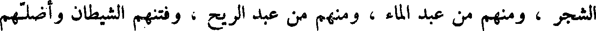
الشجر ، ومنهم من عبد الماء ، ومنهم من عبد الريح ، وفتنهم الشيطان وأضلهم
File: 000553.gt.txt (if the image is defective, simply delete all Arabic text and the line will be excluded)

وأطغاهم .
File: 000554.gt.txt (if the image is defective, simply delete all Arabic text and the line will be excluded)

وكان قد ولد له ناحور ، بعد أن أتت عليه مائة وثلاثون سنة . ولما حضرت
File: 000555.gt.txt (if the image is defective, simply delete all Arabic text and the line will be excluded)

ساروغ الوفاة أوصى ابنه ناحور ، وأمره بعبادة الله تعالى ، ومات ساروغ لثلاث
File: 000556.gt.txt (if the image is defective, simply delete all Arabic text and the line will be excluded)

بقين من آب يوم الأحد ، وكانت حياته مائتين وثلاثين سنة .
File: 000557.gt.txt (if the image is defective, simply delete all Arabic text and the line will be excluded)
ناحور بن ساروغ
File: 000558.gt.txt (if the image is defective, simply delete all Arabic text and the line will be excluded)

وكان ناحور مكان أبيه ، فكثرت عبادة الأصنام في زمانه ، فأمر الله سبحانه
File: 000559.gt.txt (if the image is defective, simply delete all Arabic text and the line will be excluded)

الأرض ، فزلزلت عليهم زلزلة شديدة ، حتى سقطت تلك الأصنام ، فلم يكترثوا
File: 000560.gt.txt (if the image is defective, simply delete all Arabic text and the line will be excluded)

بذلك ، أعادوا أصناما مكانها .
File: 000561.gt.txt (if the image is defective, simply delete all Arabic text and the line will be excluded)

بركة أبينا آدم ، ويجعل في ولدكم الملك ، وأنا متوفى ، ولن يفلت من أهل
File: 000562.gt.txt (if the image is defective, simply delete all Arabic text and the line will be excluded)
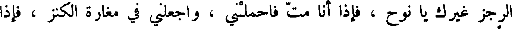
الرجز غيرك يا نوح ، فإذا أنا مت فاحملني ، واجعلني في مغارة الكنز ، فإذا
File: 000563.gt.txt (if the image is defective, simply delete all Arabic text and the line will be excluded)

أراد الله أن تركب السفينة ، فاحمل جسد أبينا آدم ، فاهبط به معك ، ثم اجعله
File: 000564.gt.txt (if the image is defective, simply delete all Arabic text and the line will be excluded)

وسط البيت الأعلى من السفينة ، ثم كن أنت وبنوك في طرف السفينة الشرقي ،
File: 000565.gt.txt (if the image is defective, simply delete all Arabic text and the line will be excluded)

ولتكن امرأتك وكنائنك في طرف السفينة الغربي ، وليكن جسد آدم بينكم ،
File: 000566.gt.txt (if the image is defective, simply delete all Arabic text and the line will be excluded)

فلا تجوزا إلى نسائكم و لا تجز نساؤكم إليكم ، ولا تأكلوا و لا تشربوا معهن ،
File: 000567.gt.txt (if the image is defective, simply delete all Arabic text and the line will be excluded)

و لا تقربوهن ، حتى تخرجوا من السفينة ، فإذا ذهب الطوفان وخرجتم من
File: 000568.gt.txt (if the image is defective, simply delete all Arabic text and the line will be excluded)

السفينة إلا الأرض ، فصل أنت عند جسد آدم ، ثم أوص ساما أكبر بنيك ،
File: 000569.gt.txt (if the image is defective, simply delete all Arabic text and the line will be excluded)

فليذهب بجسد آدم ، حتى يجعله في وسط الأرض ، وليجعل معه رجلا من
File: 000570.gt.txt (if the image is defective, simply delete all Arabic text and the line will be excluded)

أولاده يقوم عليه ، وليكن حبرا لله حياته لا ينكح امرأة ، ولا يبني بيتا ،
File: 000571.gt.txt (if the image is defective, simply delete all Arabic text and the line will be excluded)

و لا يهريق دما ، و لا يقرب قربانا من الدواب ، و لا الطير ، فان الله مرسل
File: 000572.gt.txt (if the image is defective, simply delete all Arabic text and the line will be excluded)

معه ملكا من الملائكة يدله على وسط الأرض ويؤنسه .
File: 000573.gt.txt (if the image is defective, simply delete all Arabic text and the line will be excluded)

وتوفي لمك لسبع عشرة ليلة خلت من آذار يوم الأحد ، على تسع ساعات
File: 000574.gt.txt (if the image is defective, simply delete all Arabic text and the line will be excluded)

من النهار ، وكانت حياته سبعمائة وسبعا وسبعين سنة .
File: 000575.gt.txt (if the image is defective, simply delete all Arabic text and the line will be excluded)

نوح
File: 000576.gt.txt (if the image is defective, simply delete all Arabic text and the line will be excluded)

وأوحى الله عز وجل إلى نوح في أيام جده اخنوخ ، وهو إدريس النبي ،
File: 000577.gt.txt (if the image is defective, simply delete all Arabic text and the line will be excluded)

وقبل أن يرفع الله ادريس،وأمره أن ينذر قومه،وينهاهم عن المعاصي التي كانوا
File: 000578.gt.txt (if the image is defective, simply delete all Arabic text and the line will be excluded)

يركبونها ، ويحذرهم العذاب ، فأقام على عبادة الله تعالى والدعاء لقومه ، وحبس
File: 000579.gt.txt (if the image is defective, simply delete all Arabic text and the line will be excluded)

نفسه على عبادة الله تعالى والدعاء لقومه ، لا ينكح النساء خمسمائة عام ، ثم أوحى
File: 000580.gt.txt (if the image is defective, simply delete all Arabic text and the line will be excluded)
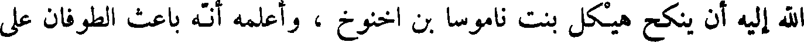
الله إليه أن ينكح هيكل بنت ناموسا بن اخنوخ ، وأعلمه انه باعث الطوفان على
File: 000581.gt.txt (if the image is defective, simply delete all Arabic text and the line will be excluded)

القربان فهو حل لبني هارون خاصة ، حرام على غيرهم ، ومن أذنب منهم ذنبا ،
File: 000582.gt.txt (if the image is defective, simply delete all Arabic text and the line will be excluded)

فليقرب قربانا لله عند المذبح على قدر ما يجد بقرا ، أو غنما ، أو شفنينين ،
File: 000583.gt.txt (if the image is defective, simply delete all Arabic text and the line will be excluded)

أو فرخي حمام .
File: 000584.gt.txt (if the image is defective, simply delete all Arabic text and the line will be excluded)

فأوحى الله عز وجل إلى موسى أن يكتب العشر الآيات في لوحي زمرد ،
File: 000585.gt.txt (if the image is defective, simply delete all Arabic text and the line will be excluded)

فكتبها على ما أمره الله ، وهذا العشر الآيات :
File: 000586.gt.txt (if the image is defective, simply delete all Arabic text and the line will be excluded)

قال الله:إني أنا الرب الذي أخرجتك من ارض بيت الرق والعبودية، ولا
File: 000587.gt.txt (if the image is defective, simply delete all Arabic text and the line will be excluded)

يكون لك اله آخر دوني،ولا تتخذ تمثالا ،ولا صنما مشبها بي من فوق السماء،
File: 000588.gt.txt (if the image is defective, simply delete all Arabic text and the line will be excluded)

ولا تحت الأرض ،ولا تسجد لها ،ولا تعبدها من اجل أنا الرب الملك القاهر قاضي
File: 000589.gt.txt (if the image is defective, simply delete all Arabic text and the line will be excluded)

ديون الآباء عن الأبناء ، نقمي على الثلاث والرباع لمبغضي ، واصنع نعمي لمحبي
File: 000590.gt.txt (if the image is defective, simply delete all Arabic text and the line will be excluded)

وحافظ وصيتي إلى ألوف الآلاف من المحبين لي ، الحافظين لوصيتي .
File: 000591.gt.txt (if the image is defective, simply delete all Arabic text and the line will be excluded)

لا تحلف باسم الرب كاذبا لان الله لا يزكي من حلف باسمه كاذبا .
File: 000592.gt.txt (if the image is defective, simply delete all Arabic text and the line will be excluded)

واذكر يوم السبت لتطهره،أعمل ستة أيام،واسع في أعمالك كلها،واليوم
File: 000593.gt.txt (if the image is defective, simply delete all Arabic text and the line will be excluded)

السابع سبت الرب إلهك لا تعمل فيه شيئا من الأعمال أنت وابنك وابنتك وعبدك
File: 000594.gt.txt (if the image is defective, simply delete all Arabic text and the line will be excluded)

أمتك ونعمك وبهائمك والساكن في قراك ، لأنه في ستة أيام خلق الله السماء
File: 000595.gt.txt (if the image is defective, simply delete all Arabic text and the line will be excluded)

والأرض والنجوم وجميع ما فرع في السماء ، فلهذا بارك الله اليوم السابع
File: 000596.gt.txt (if the image is defective, simply delete all Arabic text and the line will be excluded)

وطهره .
File: 000597.gt.txt (if the image is defective, simply delete all Arabic text and the line will be excluded)

واكرم أباك وأمك لتطول أيامك في الأرض التي اعطاكها الرب ألهك .
File: 000598.gt.txt (if the image is defective, simply delete all Arabic text and the line will be excluded)

ولا تقتل .
File: 000599.gt.txt (if the image is defective, simply delete all Arabic text and the line will be excluded)

ولا تزن .
File: 000600.gt.txt (if the image is defective, simply delete all Arabic text and the line will be excluded)

و لا تسرق .
File: 000601.gt.txt (if the image is defective, simply delete all Arabic text and the line will be excluded)

ولا تشهد على صاحبك شهادة كاذبة .
File: 000602.gt.txt (if the image is defective, simply delete all Arabic text and the line will be excluded)

و لا تشته بيت صاحبك و لا زوجة صاحبك ، و لا عبده ، و لا أمته ولا
File: 000603.gt.txt (if the image is defective, simply delete all Arabic text and the line will be excluded)
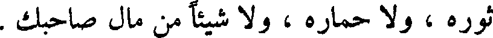
ثوره ، ولا حماره ، و لا شيئا من مال صاحبك .
File: 000604.gt.txt (if the image is defective, simply delete all Arabic text and the line will be excluded)

وصعد موسى طور سيناء فأقام أربعين يوما ، فكتب التوراة ، فاسبطأه بنو
File: 000605.gt.txt (if the image is defective, simply delete all Arabic text and the line will be excluded)

يبعث لنا ملكا حتى يقاتل عدوه ، وقال : انه وفاء لكم ، ولا صدق نية ،
File: 000606.gt.txt (if the image is defective, simply delete all Arabic text and the line will be excluded)
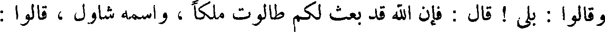
وقالوا : بلى ! قال فإن الله قد بعث لكم طالوت مالكا ، واسمه شاول ، قالوا :
File: 000607.gt.txt (if the image is defective, simply delete all Arabic text and the line will be excluded)

والله ما هو من سبط الملك والنبوة ، ما هو من ولد لاوي ، و لا يهوذا ، وإنما
File: 000608.gt.txt (if the image is defective, simply delete all Arabic text and the line will be excluded)

هو من سبط بنيامين . قال شمويل : فليس لكم أن تختاروا على الله ، فدعا شمويل
File: 000609.gt.txt (if the image is defective, simply delete all Arabic text and the line will be excluded)
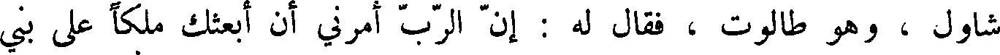
شاول ، وهو طالوت ، فقال له : أن الرب امرني أن ابعثك ملكا على بني
File: 000610.gt.txt (if the image is defective, simply delete all Arabic text and the line will be excluded)

إسرائيل ، والله يأمرك أن تنتقم من عمليق ، فأهلك عمليق وكل ما له ، و لا
File: 000611.gt.txt (if the image is defective, simply delete all Arabic text and the line will be excluded)

تبق له شيئا من رجل ، و لا امرأة ، و لا صبي رضيع ، و لا عجل ، ولا شاة ،
File: 000612.gt.txt (if the image is defective, simply delete all Arabic text and the line will be excluded)
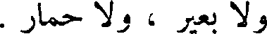
و لا بعير ، و لا حمار .
File: 000613.gt.txt (if the image is defective, simply delete all Arabic text and the line will be excluded)
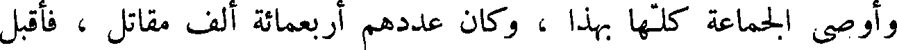
وأوصى الجماعة كلها بهذا ، وكان عددهم أربعمائة ألف مقاتل ، فأقبل
File: 000614.gt.txt (if the image is defective, simply delete all Arabic text and the line will be excluded)
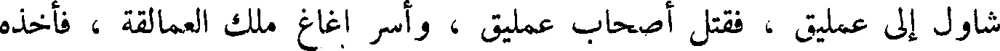
شاول إلى عمليق ، فقتل أصحاب عمليق ، واسر اغاغ ملك العمالقة ، فأخذه
File: 000615.gt.txt (if the image is defective, simply delete all Arabic text and the line will be excluded)

حيا ، فاستبقاه ، وامتنعوا من إتلاف شيء من البقر ، والغنم ، وابقوا لأنفسهم ،
File: 000616.gt.txt (if the image is defective, simply delete all Arabic text and the line will be excluded)

فأوحى الله تعالى إلى شمويل : إن شاول عصاني، ولم يهلك عمليق، وكل ما حواه
File: 000617.gt.txt (if the image is defective, simply delete all Arabic text and the line will be excluded)

ملكه . فقال شمويل لشاول : أن الله قد غضب من فعلك ! فدعا شاول باغاغ ،
File: 000618.gt.txt (if the image is defective, simply delete all Arabic text and the line will be excluded)

فقال : ما أمر الموت ؟ قال : الذبح ! فذبحه ، ثم قال شاول لشمويل : امض
File: 000619.gt.txt (if the image is defective, simply delete all Arabic text and the line will be excluded)

معي لنسجد بين يديش الله تعالى ، فامتنع ، فأمسك رداء شمويل فخرقه ، فقال
File: 000620.gt.txt (if the image is defective, simply delete all Arabic text and the line will be excluded)

شمويل : كذا ينخرق ملكك .
File: 000621.gt.txt (if the image is defective, simply delete all Arabic text and the line will be excluded)

وارتفعت النصرة عن شاول ، ودخلته ريح سوء ، وكان يضطرب ، ويتغير
File: 000622.gt.txt (if the image is defective, simply delete all Arabic text and the line will be excluded)

لونه ، فقال أصحابه : لو أتيت بإنسان حسن الصوت ، من الشعارير ، يقرا
File: 000623.gt.txt (if the image is defective, simply delete all Arabic text and the line will be excluded)

عليك ، إذا دخلتك هذه الريح السوء ! فأرسل إلى ايشا : ابعث إلي داود ابنك ،
File: 000624.gt.txt (if the image is defective, simply delete all Arabic text and the line will be excluded)

فبعث به إليه ، فكان إذا خنق شاول اخذ داود قيثاره بيده ، وتكلم عليها ،
File: 000625.gt.txt (if the image is defective, simply delete all Arabic text and the line will be excluded)

فيذهب عنه الريح السوء .
File: 000626.gt.txt (if the image is defective, simply delete all Arabic text and the line will be excluded)

ثم اجتمع الحنفاء الذين كانوا في وقت شاول ، فقاتلهم ، وهم عبدة النجوم ،
File: 000627.gt.txt (if the image is defective, simply delete all Arabic text and the line will be excluded)

وخرج إليهم شاول في جموعه ، فخرج منهم رجل طوله خمس اذرع يقال له
File: 000628.gt.txt (if the image is defective, simply delete all Arabic text and the line will be excluded)
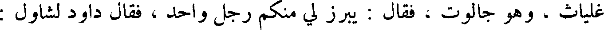
غلياث ، وهو جالوت ، فقال : يبرز لي منكم رجل واحد ، فقال داود لشاول :
File: 000629.gt.txt (if the image is defective, simply delete all Arabic text and the line will be excluded)

وكان ذلك بعد أن قتل موسى سيحون ملك الأموري واستباح أرضه .
File: 000630.gt.txt (if the image is defective, simply delete all Arabic text and the line will be excluded)

ولما كان في سنة الأربعين من مقامهم في التيه ، وهي برية سينا ، أوحى
File: 000631.gt.txt (if the image is defective, simply delete all Arabic text and the line will be excluded)

الله إلى موسى : إني قابض هارون إلي ، فاصعد به الجبل لتأتى ملائكتي فتقبض
File: 000632.gt.txt (if the image is defective, simply delete all Arabic text and the line will be excluded)

روحه ! فاخذ موسى بيد هارون أخيه ، فلما صعد به الجبل لم يكن معه إلا
File: 000633.gt.txt (if the image is defective, simply delete all Arabic text and the line will be excluded)

اليعازر بن هارون ، فلما صار على الجبل إذ سرير عليه ثياب ، فقال له موسى :
File: 000634.gt.txt (if the image is defective, simply delete all Arabic text and the line will be excluded)
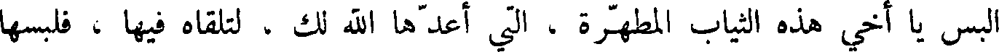
البس يا أخي هذه الثياب المطهرة ، التي أعدها الله لك ، لتلقاه فيها ، فلبسها
File: 000635.gt.txt (if the image is defective, simply delete all Arabic text and the line will be excluded)
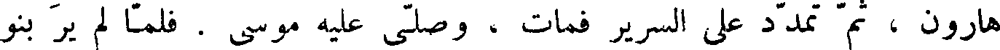
هارون ، ثم تمدد على السرير فمات ، وصلى عليه موسى . فلما لم ير بنو
File: 000636.gt.txt (if the image is defective, simply delete all Arabic text and the line will be excluded)
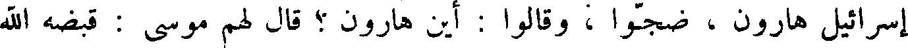
إسرائيل هارون ، ضجوا ، وقالوا : أين هارون ؟ قال لهم موسى : قبضه الله
File: 000637.gt.txt (if the image is defective, simply delete all Arabic text and the line will be excluded)

إليه ، فاضطربوا .
File: 000638.gt.txt (if the image is defective, simply delete all Arabic text and the line will be excluded)

وكان هارون محببا فيهم ، لين الجانب لهم ، فرفعه الله لهم على السرير ،
File: 000639.gt.txt (if the image is defective, simply delete all Arabic text and the line will be excluded)

حتى رأوا وجهه ، فعلموا انه قد مات ، وكانت سنو هارون يومئذ مائة وثلاثا
File: 000640.gt.txt (if the image is defective, simply delete all Arabic text and the line will be excluded)

وعشرين سنة ، وكان له من الولد أربعة : نادب ، واليهو ، و اليعازر ، وايتمر ،
File: 000641.gt.txt (if the image is defective, simply delete all Arabic text and the line will be excluded)

وتوفي في حياته نادب ، واليهو ، وبقي اليعازر ، وايتمر .
File: 000642.gt.txt (if the image is defective, simply delete all Arabic text and the line will be excluded)

وصار اليعازر مكان هارون يقدس في قبة الزمان ، ودعا موسى يوشع
File: 000643.gt.txt (if the image is defective, simply delete all Arabic text and the line will be excluded)

ابن نون . وقال له : بين يدي بني إسرائيل سر . وشد قلبك ، فإنك تدخل
File: 000644.gt.txt (if the image is defective, simply delete all Arabic text and the line will be excluded)

ببني إسرائيل إلى ارض بني كنعان التي ورثهم الله ، وهذه التوراة ادفعها
File: 000645.gt.txt (if the image is defective, simply delete all Arabic text and the line will be excluded)

إلى كهنة بني لاوي . الذين كانوا يقومون بتابوت السكينة ، ووقروا مقام الله .
File: 000646.gt.txt (if the image is defective, simply delete all Arabic text and the line will be excluded)

واحفظوا وصاياه ، التي بينها لكم في التوراة ، وأوصاهم أن يتبعوا ما فيها ،
File: 000647.gt.txt (if the image is defective, simply delete all Arabic text and the line will be excluded)

وبرك عليهم .
File: 000648.gt.txt (if the image is defective, simply delete all Arabic text and the line will be excluded)

وكان مما أوصى الله عز وجل به لبنيا إسرائيل على لسان موسى أن قال لهم:
File: 000649.gt.txt (if the image is defective, simply delete all Arabic text and the line will be excluded)

اذكروا اليوم الذي قمتم فيه قدام الله إذ قال الله لي : اجمع هذا الشعب قدامي ،
File: 000650.gt.txt (if the image is defective, simply delete all Arabic text and the line will be excluded)
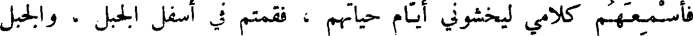
فأسمعهم كلامي ليخشوني أيام حياتهم ، فقمتم في اسفل الجبل ، والجبل
File: 000651.gt.txt (if the image is defective, simply delete all Arabic text and the line will be excluded)

يتوقد نارا إلى قلب السماء ، وكلمني الله من جوف النار ، فسمعتم الصوت ،
File: 000652.gt.txt (if the image is defective, simply delete all Arabic text and the line will be excluded)
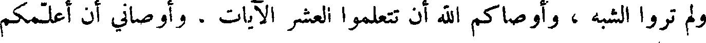
ولم تروا الشبه ، وأوصاكم الله أن تتعلموا العشر الآيات ، وأوصاني أن أعلمكم
File: 000653.gt.txt (if the image is defective, simply delete all Arabic text and the line will be excluded)

الجبل ، حتى اشترى البيدر بخمسين أستارا ، وابتنى هناك مذبحا ، فكف الموت
File: 000654.gt.txt (if the image is defective, simply delete all Arabic text and the line will be excluded)

عن بني إسرائيل .
File: 000655.gt.txt (if the image is defective, simply delete all Arabic text and the line will be excluded)

وكان داود قد أسن وضعف بدنه ، وكان له ابن يقال له ادونياس ، فاستمال
File: 000656.gt.txt (if the image is defective, simply delete all Arabic text and the line will be excluded)

يؤاب صاحب حروب داود وقوما من قواد داود ، وقال لهم : قد كبر الملك
File: 000657.gt.txt (if the image is defective, simply delete all Arabic text and the line will be excluded)

داود ، وأنا أولى أن أقوم مقامه ؛ فلما بلغ داود ذلك أرسل إلى سادوق الكاهن
File: 000658.gt.txt (if the image is defective, simply delete all Arabic text and the line will be excluded)

وناتان النبي ، وقال لهم : اجمعوا أهل المملكة ، واحملوا سليمان ابني على
File: 000659.gt.txt (if the image is defective, simply delete all Arabic text and the line will be excluded)

بغلي ، أجلسوه على منبري ، فقد جعله الله رأسا على بني إسرائيل ، والله
File: 000660.gt.txt (if the image is defective, simply delete all Arabic text and the line will be excluded)

يعظم ملكه ، ويرفع شانه ! فمضوا مع سليمان حتى علا منبر داود ، واجتمع
File: 000661.gt.txt (if the image is defective, simply delete all Arabic text and the line will be excluded)

عليه أهل الملكة ، فقال داود:هكذا اعلمني الله أن يملك سليمان ابني ، وعيناي
File: 000662.gt.txt (if the image is defective, simply delete all Arabic text and the line will be excluded)

تنظران إليه ، وكان سليمان يومئذ ابن اثنتي عشرة سنة .
File: 000663.gt.txt (if the image is defective, simply delete all Arabic text and the line will be excluded)

ثم اشتدت على داود علته ، فأوصى سليمان ، وقال : أنا ماض في سبيل
File: 000664.gt.txt (if the image is defective, simply delete all Arabic text and the line will be excluded)
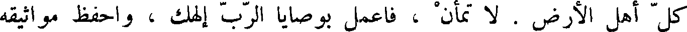
كل أهل الأرض . لا تمأن ، فاعمل بوصايا الرب إلهك ، واحفظ مواثيقه
File: 000665.gt.txt (if the image is defective, simply delete all Arabic text and the line will be excluded)

وعهوده ووصاياه التي في التوراة المنزلة على موسى بن عمران . ومات داود
File: 000666.gt.txt (if the image is defective, simply delete all Arabic text and the line will be excluded)

وله مائة وعشرون سنة ، وكان ملكه أربعين سنة .
File: 000667.gt.txt (if the image is defective, simply delete all Arabic text and the line will be excluded)
وسار إلى خاله ، فزوجه إياها ، فقال يعقوب : أن التي كانت مسماة لي راحيل
File: 000668.gt.txt (if the image is defective, simply delete all Arabic text and the line will be excluded)

أختها . فقال : هذه اكبر ، وأنا أزوجك أيضا راحيل ؛ فتزوجهما جميعا .
File: 000669.gt.txt (if the image is defective, simply delete all Arabic text and the line will be excluded)
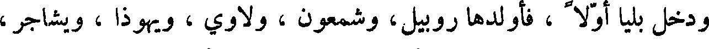
ودخل بليا أولا ، فأولدها روبيل، وشمعون ، ولاوي ، ويهوذا ، ويشاجر ،
File: 000670.gt.txt (if the image is defective, simply delete all Arabic text and the line will be excluded)

وزفولون ، وجارية بقال لها دينا ، ثم زوجه خاله بابنته الأخرى ، وهي راحيل ،
File: 000671.gt.txt (if the image is defective, simply delete all Arabic text and the line will be excluded)
فأبطأ عليها الولد ، حتى عظم ذلك عليها ، ثم وهب الله ، سبحانه وتعالى ،
File: 000672.gt.txt (if the image is defective, simply delete all Arabic text and the line will be excluded)
يوسف وبنيامين .
File: 000673.gt.txt (if the image is defective, simply delete all Arabic text and the line will be excluded)

ووقع يعقوب بزلفا جارية كانت لليا ، فولدت منه كاذ ، وآشر ، ونفتالي .
File: 000674.gt.txt (if the image is defective, simply delete all Arabic text and the line will be excluded)

ووقع بوليدة راحيل ، فولدت دان ، وقال قوم إن يعقوب تزوج راحيل
File: 000675.gt.txt (if the image is defective, simply delete all Arabic text and the line will be excluded)

قبل ليا ، وقال أهل الكتاب تزوجهما جميعا في وقت واحد ، فماتت راحيل ،
File: 000676.gt.txt (if the image is defective, simply delete all Arabic text and the line will be excluded)
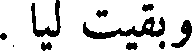
وبقيت ليا .
File: 000677.gt.txt (if the image is defective, simply delete all Arabic text and the line will be excluded)

وكان يوسف احب ولد يعقوب إلى يعقوب لأنه كان أجملهم وجها ،
File: 000678.gt.txt (if the image is defective, simply delete all Arabic text and the line will be excluded)

وكانت أمه احب نسائه إليه ، فحسده اخوته ذلك ، فأخرجوه معهم ، وكان من
File: 000679.gt.txt (if the image is defective, simply delete all Arabic text and the line will be excluded)

خبرهم ما قصه الله ، عز وجل ، في كتابه العزيز ، حتى بيع ، واستعبد ، وغاب
File: 000680.gt.txt (if the image is defective, simply delete all Arabic text and the line will be excluded)

عن أبيه أربعين سنة ، ثم رده الله ، سبحانه ، عليه ، وجمعهم ويوسف بمصر
File: 000681.gt.txt (if the image is defective, simply delete all Arabic text and the line will be excluded)

على ما قد قصه الله في كتابه .
File: 000682.gt.txt (if the image is defective, simply delete all Arabic text and the line will be excluded)

وولد ليوسف بمصر عدة أولاد ، فأقام يعقوب بمصر سبع عشرة سنة ،
File: 000683.gt.txt (if the image is defective, simply delete all Arabic text and the line will be excluded)

ولما حضرته الوفاة أوصى يوسف ولده ألا يدفنه بمصر ، وتوفي وله مائة
File: 000684.gt.txt (if the image is defective, simply delete all Arabic text and the line will be excluded)

وأربعون سنة .
File: 000685.gt.txt (if the image is defective, simply delete all Arabic text and the line will be excluded)

متوشلح بن اخنوخ
File: 000686.gt.txt (if the image is defective, simply delete all Arabic text and the line will be excluded)
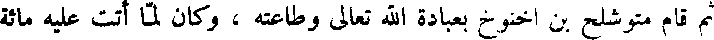
ثم قام متوشلح بن اخنوخ بعبادة الله تعالى وطاعته ، وكان لما أتت عليه مائة
File: 000687.gt.txt (if the image is defective, simply delete all Arabic text and the line will be excluded)
وسبع وثمانون سنة ، ولد له لمك ، فأوحى الله إلى نوح في عصره ، واعلمه انه
File: 000688.gt.txt (if the image is defective, simply delete all Arabic text and the line will be excluded)

باعث الطوفان على الناس ، وأمره أن يعمل السفينة من الخشب ، ولما كملت لنوح
File: 000689.gt.txt (if the image is defective, simply delete all Arabic text and the line will be excluded)

ثلاثمائة سنة وأربع وأربعون سنة تم الألف الثاني .
File: 000690.gt.txt (if the image is defective, simply delete all Arabic text and the line will be excluded)

وتوفي متوشلح في إحدى وعشرين من أيلول ، يوم الخميس ، وكانت حياته
File: 000691.gt.txt (if the image is defective, simply delete all Arabic text and the line will be excluded)

لمك بن متوشلح
File: 000692.gt.txt (if the image is defective, simply delete all Arabic text and the line will be excluded)

تسعمائة وستين سنة .
File: 000693.gt.txt (if the image is defective, simply delete all Arabic text and the line will be excluded)

فقام لمك بعد أبيه بعبادة الله وطاعته ، وكان قد ولد له بعد أن أتت عليه
File: 000694.gt.txt (if the image is defective, simply delete all Arabic text and the line will be excluded)

مائة واثنتان وثمانون سنة ، وكثرت الجبابرة في عصره ، وذلك انه كان لما وقع
File: 000695.gt.txt (if the image is defective, simply delete all Arabic text and the line will be excluded)

بنو شيث في بنات قابيل ولدت منهم جبابرة .
File: 000696.gt.txt (if the image is defective, simply delete all Arabic text and the line will be excluded)

ثم دنا موت لمك ، فدعا نوحا ، وساما ، وحاما ، ويافثا ، ونساءهم ، ولم
File: 000697.gt.txt (if the image is defective, simply delete all Arabic text and the line will be excluded)

يكن بقي من أولاد شيث في الجبل أحد غيرهم إلا هبطوا إلى بني قابيل ، فكانوا
File: 000698.gt.txt (if the image is defective, simply delete all Arabic text and the line will be excluded)

ثمانية انفس ، ولم يكن لهم أولاد فبل الطوفان فصلى عليهم ودعا لهم بالبركة، ثم
File: 000699.gt.txt (if the image is defective, simply delete all Arabic text and the line will be excluded)

بكى ، وقال لهم: انه لم يبق من جنسنا أحد إلا هؤلاء الثمانية الأنفس ، وأسأل
File: 000700.gt.txt (if the image is defective, simply delete all Arabic text and the line will be excluded)

الله الذي خلق آدم وحواء وحدهما ، ثم كثر ولدهما ، أن ينجيكم من هذا
File: 000701.gt.txt (if the image is defective, simply delete all Arabic text and the line will be excluded)

الرجز الذي اعد للامة السوء ، ويكثر ولدكم ، حتى يملأوا الأرض ، ويعطيكم
File: 000702.gt.txt (if the image is defective, simply delete all Arabic text and the line will be excluded)

ولد يعقوب
File: 000703.gt.txt (if the image is defective, simply delete all Arabic text and the line will be excluded)

وكان ليعقوب من الولد اثنا عشر ذكرا : روبيل ، وشمعون ، ولاوي ،
File: 000704.gt.txt (if the image is defective, simply delete all Arabic text and the line will be excluded)

ويهوذا ، ويشاجر ، وزفولون ، ويوسف ، وبنيامين ، وكاذ ، وآشر ، ودان ،
File: 000705.gt.txt (if the image is defective, simply delete all Arabic text and the line will be excluded)

ونفتالي ، فهؤلاء بنو يعقوب ، وهم بنو إسرائيل ، وهم الأسباط .
File: 000706.gt.txt (if the image is defective, simply delete all Arabic text and the line will be excluded)

وكان لروبيل من الولد .: خنوخ ، وفلو ، وحصران ، وكرمي .
File: 000707.gt.txt (if the image is defective, simply delete all Arabic text and the line will be excluded)

وكان لشمعون من الولد : نموئيل ، ويامين ، وشاوول .
File: 000708.gt.txt (if the image is defective, simply delete all Arabic text and the line will be excluded)
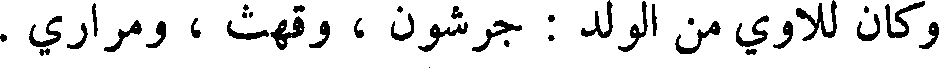
وكان للاوي من الولد : جرشون ، وقهث ، ومراري .
File: 000709.gt.txt (if the image is defective, simply delete all Arabic text and the line will be excluded)

وكان ليهوذا من الولد : عار ، وأونان ، وشيلا ، وفارص ، وزارح .
File: 000710.gt.txt (if the image is defective, simply delete all Arabic text and the line will be excluded)

وكان ليشاجر من الولد : تولع وفوا ، ويوب ، وشمرون .
File: 000711.gt.txt (if the image is defective, simply delete all Arabic text and the line will be excluded)

وكان لآشر من الولد : يمنا ، واشوا ، وأشوي ، وبريعا ، وسارح .
File: 000712.gt.txt (if the image is defective, simply delete all Arabic text and the line will be excluded)

وكان لزفولون من الولد : سارد ، وايلون ، ويحلائيل .
File: 000713.gt.txt (if the image is defective, simply delete all Arabic text and the line will be excluded)

وولد ليوسف بأرض مصر : افرائيم ، ومنشى .
File: 000714.gt.txt (if the image is defective, simply delete all Arabic text and the line will be excluded)

وكان لبنيامين : بالع وبخر واشبال ونعمان ا، وأوخي ، ومفيم ،
File: 000715.gt.txt (if the image is defective, simply delete all Arabic text and the line will be excluded)
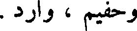
وحفيم ، وارد .
File: 000716.gt.txt (if the image is defective, simply delete all Arabic text and the line will be excluded)

وكان لكاذ من الولد : صفيان ، وشوني ، واصبون ، وعاري ، وارودي ،
File: 000717.gt.txt (if the image is defective, simply delete all Arabic text and the line will be excluded)

وارايلي .
File: 000718.gt.txt (if the image is defective, simply delete all Arabic text and the line will be excluded)

وكان لنفتالي من الولد يحصيل وغوني ويبصر ، وشاليم .
File: 000719.gt.txt (if the image is defective, simply delete all Arabic text and the line will be excluded)

فهؤلاء أولاد يعقوب وولد ولده ، الذين اجتمعوا بمصر عند يوسف ،
File: 000720.gt.txt (if the image is defective, simply delete all Arabic text and the line will be excluded)

مع ولدي يوسف الذين ولدا بمصر ، وأعطاهم أرضا ، وقال : ازرعوا ،
File: 000721.gt.txt (if the image is defective, simply delete all Arabic text and the line will be excluded)

فما خرج فلفرعون الخمس .
File: 000722.gt.txt (if the image is defective, simply delete all Arabic text and the line will be excluded)

ولما حضرت يعقوب الوفاة جمع ولده وولد ولده ، فبارك عليهم ، ودعا
File: 000723.gt.txt (if the image is defective, simply delete all Arabic text and the line will be excluded)

المسيح عيسى بن مريم
File: 000724.gt.txt (if the image is defective, simply delete all Arabic text and the line will be excluded)

وكانت حنة امرأة عمران قد نذرت أن وهب الله لها ولد أن تجعله لله ،
File: 000725.gt.txt (if the image is defective, simply delete all Arabic text and the line will be excluded)

فلما ولدت مريم دفعتها إلى زكرياء بن برخيا بن شوا1 بن نحرائيل بن سهلون بن
File: 000726.gt.txt (if the image is defective, simply delete all Arabic text and the line will be excluded)

ارسوا بن شويل بن يعود2 بن موسى بن عمران ، وكان كاهن المذبح ، فلم يزل.
File: 000727.gt.txt (if the image is defective, simply delete all Arabic text and the line will be excluded)

كذلك حتى إذا كملت سبع عشرة سنة بعث الله إليها الملك ليهب لها ولدا زكيا ،
File: 000728.gt.txt (if the image is defective, simply delete all Arabic text and the line will be excluded)
فكان من خبرها ما قد قصه الله عز وجل ، حتى اشتملت على الحمل ، فلما
File: 000729.gt.txt (if the image is defective, simply delete all Arabic text and the line will be excluded)
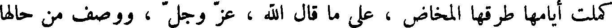
كملت أيامها طرقها المخاض ، على مال قال الله ، عز وجل ، ووصف من حالها
File: 000730.gt.txt (if the image is defective, simply delete all Arabic text and the line will be excluded)

وحاله ، وكلامه من تحتها ، وكلامه في المهد .
File: 000731.gt.txt (if the image is defective, simply delete all Arabic text and the line will be excluded)

وكان مولده بقرية يقال لها بيت لحم من قرى فلسطين ، وكان ذلك يوم
File: 000732.gt.txt (if the image is defective, simply delete all Arabic text and the line will be excluded)

الثلاثاء لأربعة وعشرين يوما خلت من كانون الأول .
File: 000733.gt.txt (if the image is defective, simply delete all Arabic text and the line will be excluded)
قال ماشاء الله المنجم : كان الطالع للسنة التي ولد فيها المسيح في الميزان
File: 000734.gt.txt (if the image is defective, simply delete all Arabic text and the line will be excluded)

ثماني عشرة درجة ؛ والمشتري في السنبلة إحدى وثلاثين دقيقة راجعا ؛ وزحل في
File: 000735.gt.txt (if the image is defective, simply delete all Arabic text and the line will be excluded)

الجدي ست عشرة درجة وثمانيا وعشرين دقيقة ، والشمس في الحمل دقيقة ؛
File: 000736.gt.txt (if the image is defective, simply delete all Arabic text and the line will be excluded)

والزهرة في الثور أربع عشرة درجه ؛ والمريخ في الجوزاء إحدى وعشرين درجة
File: 000737.gt.txt (if the image is defective, simply delete all Arabic text and the line will be excluded)

وأربعا وأربعين دقيقة ؛ وعطارد في الحمل أربع درجات وسبع عشرة دقيقه .
File: 000738.gt.txt (if the image is defective, simply delete all Arabic text and the line will be excluded)

وأما أصحاب الإنجيل فلا يقولون انه تكلم في المهد ، ويقولون : أن مريم
File: 000739.gt.txt (if the image is defective, simply delete all Arabic text and the line will be excluded)

كانت مسماه برجل يقال له يوسف من ولد داود ، وإنها حملت ، فلما قرب
File: 000740.gt.txt (if the image is defective, simply delete all Arabic text and the line will be excluded)
وضع حملها سار بها إلى بيت لحم ، فلما ولدت ردها إلى ناصرة من جبل الجليل؛
File: 000741.gt.txt (if the image is defective, simply delete all Arabic text and the line will be excluded)
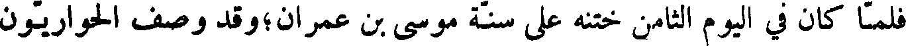
فلما كان في اليوم الثامن ختنه على سنة موسى بن عمران؛ وقد وصف الحواريون
File: 000742.gt.txt (if the image is defective, simply delete all Arabic text and the line will be excluded)

أخبار المسيح، وذكروا حاله، فاثبتنا مقالة واحد منهم ،وما وصفوه به .
File: 000743.gt.txt (if the image is defective, simply delete all Arabic text and the line will be excluded)

وكان الحواريون أثنى عشر من أسباط يعقوب وهم : شمعون بن كنعان
File: 000744.gt.txt (if the image is defective, simply delete all Arabic text and the line will be excluded)

ومخلصي ، بعد أن أحاطت بي سكرات الموت ، وقربت مني ، واحتوت
File: 000745.gt.txt (if the image is defective, simply delete all Arabic text and the line will be excluded)

علي أحداث الهلكة ، فدعوتك في ضيقي واستعنت بك يا الهي ، فسمعت صوتي
File: 000746.gt.txt (if the image is defective, simply delete all Arabic text and the line will be excluded)

فاستنقذتني من الذين اعتوروني واضطهدوني ، وكنت ناصري ، فأخرجتني من
File: 000747.gt.txt (if the image is defective, simply delete all Arabic text and the line will be excluded)

الضيق إلى الفرج ، فما أعد لك يا رب ، وأنصرك للمتوكلين عليك ، لأنه
File: 000748.gt.txt (if the image is defective, simply delete all Arabic text and the line will be excluded)

وصيرهم خولا خاضعين ، وألهمني شكرك .
File: 000749.gt.txt (if the image is defective, simply delete all Arabic text and the line will be excluded)

وكان داود إذا سبح الله بهذا الكلام رفع صوتا حسنا لم يسمع قلال مثله ، وكان
File: 000750.gt.txt (if the image is defective, simply delete all Arabic text and the line will be excluded)

إذا قرأ الزبور قال : طوبى لرجل ...1 في سبيل الأثمة لم يسلك ، وفي مجالس
File: 000751.gt.txt (if the image is defective, simply delete all Arabic text and the line will be excluded)

المستهزئين لم يجلس ، ولكن هواه سنة الله ، وبسننه تعلم الليل والنهار ، يكون
File: 000752.gt.txt (if the image is defective, simply delete all Arabic text and the line will be excluded)

كشجرة غرست على شط الماء ، تؤتي أكلها كل حين ، و لا يتناثر ورقها ،
File: 000753.gt.txt (if the image is defective, simply delete all Arabic text and the line will be excluded)

وليس كذلك المنافقون في القضاء ، و لا الخاطئون في مجمع الأبرار ؛ من اجل أن
File: 000754.gt.txt (if the image is defective, simply delete all Arabic text and the line will be excluded)

الله يعلم سبيل الأبرار وسبيل الأثمة يبطل .
File: 000755.gt.txt (if the image is defective, simply delete all Arabic text and the line will be excluded)

ثم يقول : سبح لله من في السماء ، وليسبحه من في العلى ، ولتسبحه
File: 000756.gt.txt (if the image is defective, simply delete all Arabic text and the line will be excluded)

ملائكته كلها ، ولتسبحه جنوده كلها ، ولتسبح له الشمس والقمر ؛ ولتسبح
File: 000757.gt.txt (if the image is defective, simply delete all Arabic text and the line will be excluded)

له الكواكب والنور ؛ وليسبح لاسم ربنا الماء الذي فوق السماء ، وذلك بأنه
File: 000758.gt.txt (if the image is defective, simply delete all Arabic text and the line will be excluded)

قال لكل شيء : كن فكان ، وهو خلق كل شيء وبراه ، وجعلهن دائمات
File: 000759.gt.txt (if the image is defective, simply delete all Arabic text and the line will be excluded)

الأبد ، وقدر كل شيء منهن تقديرا ، وجعل لهن حدا ومنتهى لا يجاوزنه ،
File: 000760.gt.txt (if the image is defective, simply delete all Arabic text and the line will be excluded)

فليسبح الله من في الأرض ، والنار ، والبرد ، والثلج ، والجليد ، فانه خلق
File: 000761.gt.txt (if the image is defective, simply delete all Arabic text and the line will be excluded)

الريح العاصف بكلمته .
File: 000762.gt.txt (if the image is defective, simply delete all Arabic text and the line will be excluded)

سبحوا الله تسبيحا حديثا في مسجد الصديقين ، وليفرج إسرائيل بخالقه ،
File: 000763.gt.txt (if the image is defective, simply delete all Arabic text and the line will be excluded)

وان بني صيون يكبرون ربكم ، ويسبحون اسمه بالدف، والطبل، والكبر ،
File: 000764.gt.txt (if the image is defective, simply delete all Arabic text and the line will be excluded)

يكبرونه من اجل أن يسر الله بشريعته ، ويعطي المساكين النصر ، ليشيد الصديقون
File: 000765.gt.txt (if the image is defective, simply delete all Arabic text and the line will be excluded)

تارخ بن ناحور
File: 000766.gt.txt (if the image is defective, simply delete all Arabic text and the line will be excluded)

وكان تارخ بن ناحور، هو أبو إبراهيم خليل الله،في عصر نمرود الجبار
File: 000767.gt.txt (if the image is defective, simply delete all Arabic text and the line will be excluded)

وكان نمرود أول من عبد النار وسجد لها ، وذلك انه خرجت نار من الأرض ،
File: 000768.gt.txt (if the image is defective, simply delete all Arabic text and the line will be excluded)

فاتاها ، فسجد لها ، وكلمه منها شيطان ، فبنى عليها بنية ، وجعل لها سدنة .
File: 000769.gt.txt (if the image is defective, simply delete all Arabic text and the line will be excluded)

وفي ذلك العصر تعطى الناس علم النجوم ، وحسبوا الكسوف للشمس والقمر
File: 000770.gt.txt (if the image is defective, simply delete all Arabic text and the line will be excluded)

والكواكب السائرة والراتبه ، وتكلموا في الفلك والبروج .
File: 000771.gt.txt (if the image is defective, simply delete all Arabic text and the line will be excluded)

وكان الذي علم نمرود ذلك رجلا يقال له يطق1 ، وكان تارخ ، وهو
File: 000772.gt.txt (if the image is defective, simply delete all Arabic text and the line will be excluded)

آزر أبو إبراهيم ، مع نمرود الجبار ، فحسب المنجمون لنمرود ، فقالوا له :
File: 000773.gt.txt (if the image is defective, simply delete all Arabic text and the line will be excluded)

انه يولد في مملكته مولود يعيب دينه ، ويزري عليه ، ويهدم أصنامه ، ويفرق
File: 000774.gt.txt (if the image is defective, simply delete all Arabic text and the line will be excluded)

جمعه ، فجعل لا يولد في مملكته مولود إلا شق بطنه ، حتى ولد إبراهيم ،
File: 000775.gt.txt (if the image is defective, simply delete all Arabic text and the line will be excluded)

فستره أبواه ، واخفيا أمره ، وحسيراه في مغارة حيث لا يعلم به أحد ، وكان
File: 000776.gt.txt (if the image is defective, simply delete all Arabic text and the line will be excluded)

مولده بكوثا ربا ، وكان مولد إبراهيم بعد أن أتت لتارخ مائة وسبعون سنة ،
File: 000777.gt.txt (if the image is defective, simply delete all Arabic text and the line will be excluded)

وعاش تارخ أبوه مائتي سنة وخمس سنين .
File: 000778.gt.txt (if the image is defective, simply delete all Arabic text and the line will be excluded)

على الفسق ، وكان ذوو السن من رجالهم ونسائهم أشد في ذلك من شبانهم ،
File: 000779.gt.txt (if the image is defective, simply delete all Arabic text and the line will be excluded)

فكانوا يجتمعون ، فيزمرون ويضربون بالطبول والدفوف والبرابط والصنوج ،
File: 000780.gt.txt (if the image is defective, simply delete all Arabic text and the line will be excluded)

ويصيحون ، ويضحكون ، حتى سمع أهل الحبل من بنو شيث أصواتهم ، فاجتمع
File: 000781.gt.txt (if the image is defective, simply delete all Arabic text and the line will be excluded)

منهم مائة رجل على أن يهبطوا إلى بني قابيل ، فينظروا ما تلك الأصوات ، فلما
File: 000782.gt.txt (if the image is defective, simply delete all Arabic text and the line will be excluded)

بلغ ذلك يرد أتاهم ، فناشدهم الله ، وذكرهم وصية آبائهم ، وحلف عليهم
File: 000783.gt.txt (if the image is defective, simply delete all Arabic text and the line will be excluded)

بدم هابيل ، وقام فيهم اخنوخ بن يرد ، فقال : اعلموا أنه من عصى منكم
File: 000784.gt.txt (if the image is defective, simply delete all Arabic text and the line will be excluded)

أبانا يرد ، ونقض عهود آبائنا ، وهبط من جبلنا لم ندعه يصعد ابدا ، فأبوا
File: 000785.gt.txt (if the image is defective, simply delete all Arabic text and the line will be excluded)

إلا أن يهبطوا ، فلما هبطوا اختلطوا ببنات قابيل ، بعد أن ركبوا الفواحش .
File: 000786.gt.txt (if the image is defective, simply delete all Arabic text and the line will be excluded)

فلما دنا موت يرد اجتمع إليه نوه وبنو بنيه اخنوخ ، ومتوشلح ، ولمك ،
File: 000787.gt.txt (if the image is defective, simply delete all Arabic text and the line will be excluded)

ونوح ، فصلى عليهم ، ودعا لهم بالبركة ، ونهاهم أن يهبطوا من الجبل المقدس ،
File: 000788.gt.txt (if the image is defective, simply delete all Arabic text and the line will be excluded)

وقال : إنكم لا محالة تهبطون إلى الأرض السفلى ، فأيكم كان آخر هبوطا
File: 000789.gt.txt (if the image is defective, simply delete all Arabic text and the line will be excluded)

فليهبط بجسد أبينا آدم ، ثم ليجعله وسط الأرض ، كما أوصانا ، وأمر اخنوخ
File: 000790.gt.txt (if the image is defective, simply delete all Arabic text and the line will be excluded)

ابنه إلا يزال يصلي في مغارة الكنز ، ثم توفي يوم الجمعة لليلة خلت من آذار ،
File: 000791.gt.txt (if the image is defective, simply delete all Arabic text and the line will be excluded)

حين غابت الشمس ، وكانت حياته تسعمائة سنة واثنتين وستين سنة .
File: 000792.gt.txt (if the image is defective, simply delete all Arabic text and the line will be excluded)

اخنوخ بن يرد
File: 000793.gt.txt (if the image is defective, simply delete all Arabic text and the line will be excluded)

ثم قام بعد يرد اخنوخ بن يرد ، فقام بعبادة الله ، سبحانه ، ولما أتت له خمس
File: 000794.gt.txt (if the image is defective, simply delete all Arabic text and the line will be excluded)

وستون سنة ولد له متوشلح ، وأخذ بني شيث ونساؤهم وأبناؤهم في الهبوط ،
File: 000795.gt.txt (if the image is defective, simply delete all Arabic text and the line will be excluded)

فعظم ذلك على اخنوخ ، فدعا ولده متوشلح ولمكا ونوحا ، فقال لهم : إني اعلم
File: 000796.gt.txt (if the image is defective, simply delete all Arabic text and the line will be excluded)

إن الله معذب هذه الأمة عذابا عظيما ليس فيه رحمة .
File: 000797.gt.txt (if the image is defective, simply delete all Arabic text and the line will be excluded)

وكان اخنوخ أول من خط بالقلم ، وهو إدريس النبي . فأوصى ولده ان
File: 000798.gt.txt (if the image is defective, simply delete all Arabic text and the line will be excluded)

يخلصوا عبادة الله ، ويستعملوا الصدق واليقين ، ثم رفعه الله بعد أن أتت له
File: 000799.gt.txt (if the image is defective, simply delete all Arabic text and the line will be excluded)

ثلاثمائة سنة .
File: 000800.gt.txt (if the image is defective, simply delete all Arabic text and the line will be excluded)

شقرى وشقروني يحكمان بالجور والظلم والعدوان .
File: 000801.gt.txt (if the image is defective, simply delete all Arabic text and the line will be excluded)

ولما كثر عمل قوم لوط وجورهم بعث الله ، عز وجل ، ملائكة لهلاكهم ،
File: 000802.gt.txt (if the image is defective, simply delete all Arabic text and the line will be excluded)

فنزلوا بإبراهيم ، وكان يضيف الأضياف ، ويعمل القرى ، فلما نزلوا به
File: 000803.gt.txt (if the image is defective, simply delete all Arabic text and the line will be excluded)

قرب إليهم عجلا مشويا ، فلما رآهم لا يأكلون نكرهم ، فعرفوه بأنفسهم ،
File: 000804.gt.txt (if the image is defective, simply delete all Arabic text and the line will be excluded)

وقالوا : أنا رسل ربك لهلاك أهل هذه القرية ، يعنون سدوم القرية التي كان فيها
File: 000805.gt.txt (if the image is defective, simply delete all Arabic text and the line will be excluded)

قوم لوط ، فقال لهم إبراهيم : إن فيها لوطا ، قالوا : نحن اعلم بمن فيها،
File: 000806.gt.txt (if the image is defective, simply delete all Arabic text and the line will be excluded)

لننجينه وأهله ، إلا امرأته .
File: 000807.gt.txt (if the image is defective, simply delete all Arabic text and the line will be excluded)

وكانت سارة امرأة إبراهيم واقفة ، فعجبت من قولهم ، فبشروها بإسحاق
File: 000808.gt.txt (if the image is defective, simply delete all Arabic text and the line will be excluded)

فقالت : أألد وأنا عجوز ، وهذا بعلي شيخ كبير ؟ وكان إبراهيم ابن مائة سنة ،
File: 000809.gt.txt (if the image is defective, simply delete all Arabic text and the line will be excluded)

وهي بنت تسعين ، فلما أتوا إلى لوط ، ورأتهم امرأته دخنت لقومها ، فجاءوا
File: 000810.gt.txt (if the image is defective, simply delete all Arabic text and the line will be excluded)

إلى لوط ، فقالوا : ادفع ألينا اضيافك ! فقال : لا تفضحون في ضيفي ! فلما
File: 000811.gt.txt (if the image is defective, simply delete all Arabic text and the line will be excluded)

اكثروا صدهم جبريل ، فأعماهم ، فقالوا له : إنا مهلكوهم . قال : فمتى ؟
File: 000812.gt.txt (if the image is defective, simply delete all Arabic text and the line will be excluded)

قالوا : الصبح . قال : توخرونهم إلى الصبح ؟ قال له جبريل : أليس الصبح
File: 000813.gt.txt (if the image is defective, simply delete all Arabic text and the line will be excluded)

بقريب ؟ فلما كان السحر قال له جبريل : اخرج ، ثم قلبها عليهم . ويقال
File: 000814.gt.txt (if the image is defective, simply delete all Arabic text and the line will be excluded)

نزلت عليهم نار ، فلم ينج منهم أحد ، وكانت امرأة لوط فيهم فمسخت ملحا ،
File: 000815.gt.txt (if the image is defective, simply delete all Arabic text and the line will be excluded)

فما بقي منهم مخبر .
File: 000816.gt.txt (if the image is defective, simply delete all Arabic text and the line will be excluded)

ووهب الله لإبراهيم إسحاق بن سارة ، فعجب الناس من ذلك ، وقالوا :
File: 000817.gt.txt (if the image is defective, simply delete all Arabic text and the line will be excluded)

شيخ ابن مائة سنة ، وعجوز بنت تسعين سنة ! فخرج إسحاق أشبه شيء بإبراهيم.
File: 000818.gt.txt (if the image is defective, simply delete all Arabic text and the line will be excluded)

وكان إبراهيم يزور إسماعيل وأمه في كل وقت . وبلغ إسماعيل حتى صار
File: 000819.gt.txt (if the image is defective, simply delete all Arabic text and the line will be excluded)

رجلا ، ثم تزوج امرأة من جرهم ، فزاره إبراهيم مرة ، فلم يلقه ، وكانت
File: 000820.gt.txt (if the image is defective, simply delete all Arabic text and the line will be excluded)

أمه قد ماتت ، فكلم امرأته فلم يرض عقلها ، وسألها عن إسماعيل ، فقالت :
File: 000821.gt.txt (if the image is defective, simply delete all Arabic text and the line will be excluded)

في الرعي ! فقال : إذا جاء فقولي له غير عتبة بابك ! فلما انصرف إسماعيل من
File: 000822.gt.txt (if the image is defective, simply delete all Arabic text and the line will be excluded)

رعيه قالت له آمراته : قد جاء هنا شيخ يسأل عنك . فقال إسماعيل : فما قال
File: 000823.gt.txt (if the image is defective, simply delete all Arabic text and the line will be excluded)

لك ؟ قالت قال لي : قولي له غير عتبة بابك . قال : أنت خلية ! فطلقها ،
File: 000824.gt.txt (if the image is defective, simply delete all Arabic text and the line will be excluded)

عجلا من ذهب ، وقال : هذه آلهتكم التي أصعدتكم من ارض مصر ، واتخذ
File: 000825.gt.txt (if the image is defective, simply delete all Arabic text and the line will be excluded)

للعجل أحبارا ، وعمل عيدا ، وقرب الذبائح للعجل ، فأتاه نبي بني إسرائيل ،
File: 000826.gt.txt (if the image is defective, simply delete all Arabic text and the line will be excluded)

فوعظه ، فمد يده إليه فيبست ، فقال له : ادع الله أن يرد يدي ! فدعا له
File: 000827.gt.txt (if the image is defective, simply delete all Arabic text and the line will be excluded)

النبي ، فرجعت يد يوربعم ، وأقام يوربعم على طريقه لم يرجع عنها ، واهلك
File: 000828.gt.txt (if the image is defective, simply delete all Arabic text and the line will be excluded)

الله يوربعم ، وكل من كان معه ، وقتله ، ودمر عليه ، وكان ملكه عشرين سنة .
File: 000829.gt.txt (if the image is defective, simply delete all Arabic text and the line will be excluded)

ثم ملك ابيام بن رحبعم ، فسلك سبيل أبيه ، واظهر الفواحش ، وارتكب
File: 000830.gt.txt (if the image is defective, simply delete all Arabic text and the line will be excluded)

القبيح ، فتبر الله عمره ، وكان ملكه ثلاث سنين ؛ ثم ملك اسا ، فاظهر العمل
File: 000831.gt.txt (if the image is defective, simply delete all Arabic text and the line will be excluded)

بطاعة الله تعالى ، ومنع الزنا ، وعاقب عليه وعلى الريب ، واخرج من كان
File: 000832.gt.txt (if the image is defective, simply delete all Arabic text and the line will be excluded)

يعبد الأصنام من مملكته ، حتى طرد أمه لما بلغه أنها تعبد الأصنام .
File: 000833.gt.txt (if the image is defective, simply delete all Arabic text and the line will be excluded)

وفي زمانه صار زارح ملك الحبشة ، واقبل ملك الهند إلى بيت المقدس ،
File: 000834.gt.txt (if the image is defective, simply delete all Arabic text and the line will be excluded)

فبعث الله عذابا ، فأهلك زارح وملك الهند . وكان ملك اسا أربعين سنة ، ويقال
File: 000835.gt.txt (if the image is defective, simply delete all Arabic text and the line will be excluded)

إن بني إسرائيل أوقدوا من خشب أسلحة أصحاب الهند ، لما قتلهم اسا ، سبع
File: 000836.gt.txt (if the image is defective, simply delete all Arabic text and the line will be excluded)

سنين .
File: 000837.gt.txt (if the image is defective, simply delete all Arabic text and the line will be excluded)

ثم ملك بعده ابنه يهوشافط ، فسلك سبيل أبيه ، وكان ناسكا صديقا ،
File: 000838.gt.txt (if the image is defective, simply delete all Arabic text and the line will be excluded)

فملك العشرة الأسباط ، وكان مرضيا في جميع بني إسرائيل ، وكان ملكه
File: 000839.gt.txt (if the image is defective, simply delete all Arabic text and the line will be excluded)

خمسا وعشرين سنة .
File: 000840.gt.txt (if the image is defective, simply delete all Arabic text and the line will be excluded)

ثم ملك بعده يورام ابنه ، فكفر ، ورجع قومه إلى عبادة الأصنام ، وتزوج
File: 000841.gt.txt (if the image is defective, simply delete all Arabic text and the line will be excluded)

امرأةأطغته وأضلته ، وكان ملكه أربعين سنة .
File: 000842.gt.txt (if the image is defective, simply delete all Arabic text and the line will be excluded)

ثم ملك احزيا ، بعد أبيه ، فسلك سبيله ، وكان العشرة الأسباط قد اعتزلت،
File: 000843.gt.txt (if the image is defective, simply delete all Arabic text and the line will be excluded)

وملكت منهم ملكا يقال له يهو ، فحارب احزيا ، حتى قتل من قومه مقتلة
File: 000844.gt.txt (if the image is defective, simply delete all Arabic text and the line will be excluded)

عظيمة ، ثم سلط الله عليهم ملك سورية ، ففعل بهم مثل ذلك ؛ وكان ملك
File: 000845.gt.txt (if the image is defective, simply delete all Arabic text and the line will be excluded)

احزيا سنة واحدة .
File: 000846.gt.txt (if the image is defective, simply delete all Arabic text and the line will be excluded)

ثم ملكت عقلايا بنت عمري ، فقتلت ولد داود ، حتى لم يبق من نسل داود
File: 000847.gt.txt (if the image is defective, simply delete all Arabic text and the line will be excluded)

أحدا إلا غلام يقال له يواش ، وأخذته امرأة من بني عمه يقال لها يوشبع
File: 000848.gt.txt (if the image is defective, simply delete all Arabic text and the line will be excluded)

يأمر بني إسرائيل أن يبنوا عريشا بالسعف والجريد ، فهم يقيمون ثمانية أيام
File: 000849.gt.txt (if the image is defective, simply delete all Arabic text and the line will be excluded)

يتخذون في كنائسهم ظلالات من السعف والجريد .
File: 000850.gt.txt (if the image is defective, simply delete all Arabic text and the line will be excluded)

وصلواتهم ثلاث صلوات : صلاة بالغداة ، وصلاة عند غروب الشمس ،
File: 000851.gt.txt (if the image is defective, simply delete all Arabic text and the line will be excluded)

وصلاة بعد الغروب ، فإذا وقف أحدهم للصلاة جمع عقبيه ، وجعل يده اليمنى
File: 000852.gt.txt (if the image is defective, simply delete all Arabic text and the line will be excluded)
على كتفه اليسرى ، ويده اليسرى على كتفه اليمنى ، وهو مطرق ، يركع خمس
File: 000853.gt.txt (if the image is defective, simply delete all Arabic text and the line will be excluded)

ركعات لا يسجد فيهن ، ثم يسجد في الآخرة سجدة واحدة ، ويسبح بمزامير
File: 000854.gt.txt (if the image is defective, simply delete all Arabic text and the line will be excluded)

داود في أول الصلوات ، ويقرأ في صلاة المغيب من التوراة ؛ ومعتمدهم في
File: 000855.gt.txt (if the image is defective, simply delete all Arabic text and the line will be excluded)

سننهم وشرائهم على كتب علمائهم ، وهي الكتب التي يقال لها ...1 بالعبرانية،
File: 000856.gt.txt (if the image is defective, simply delete all Arabic text and the line will be excluded)

وهي اللغة التي صارت لهم لما عبروا البحر .
File: 000857.gt.txt (if the image is defective, simply delete all Arabic text and the line will be excluded)

وسنتهم في مناكحهم إلا يتزوجوا ألا بولي وشاهدين ، واقل مهورهم
File: 000858.gt.txt (if the image is defective, simply delete all Arabic text and the line will be excluded)

للبكر مائتا درهم ، وللثيب مائة درهم بهذا الوزن لا يكون اقل منه ، والطلاق
File: 000859.gt.txt (if the image is defective, simply delete all Arabic text and the line will be excluded)

مباح متى كرهوا ، و لا يكون إلا بشهود .
File: 000860.gt.txt (if the image is defective, simply delete all Arabic text and the line will be excluded)

وسنتهم في ذبائحهم ألا يأكلوا ما ذبحه غيرهم ، وان يكون الذي يتولى
File: 000861.gt.txt (if the image is defective, simply delete all Arabic text and the line will be excluded)

الذبائح عالما بالشرائع ، ثم يأتي بالسكين ، كلما أراد أن يذبح بها ، إلى
File: 000862.gt.txt (if the image is defective, simply delete all Arabic text and the line will be excluded)

الكاهن ، فإذا رضي حدها أطلق له الذبح بها ، و إلا أمره أن يحدها ، أو يأتي
File: 000863.gt.txt (if the image is defective, simply delete all Arabic text and the line will be excluded)

بغيرها ، فإذا ذبح لم يقربها من حائط تضطرب عليه ، فإذا فرغ منها نظر إلى
File: 000864.gt.txt (if the image is defective, simply delete all Arabic text and the line will be excluded)

الحلقوم ، فان وجده لم يرغ الغلصمة ، ووجد الذبح مستويا لم يؤكل حتى
File: 000865.gt.txt (if the image is defective, simply delete all Arabic text and the line will be excluded)

ينظر إلى الرئة ، فان وجد بها عيبا ، أو علة ، أو شقا ، أو بثرة ، أو ورما ،
File: 000866.gt.txt (if the image is defective, simply delete all Arabic text and the line will be excluded)

لم تؤكل الذبيحة ، فإن سلمت الرئة نظر إلى الدماغ ، فإن وجد فيه علة لم تؤكل ،
File: 000867.gt.txt (if the image is defective, simply delete all Arabic text and the line will be excluded)

وان سلم الدماغ نظر إلى القلب ، فإن وجد فيه علة لم يأكله ، وان سلم ما في
File: 000868.gt.txt (if the image is defective, simply delete all Arabic text and the line will be excluded)

البطون والثرب من الشحم ، فلا يأكله ، ولا العروق ، واكل ما سوى ذلك .
File: 000869.gt.txt (if the image is defective, simply delete all Arabic text and the line will be excluded)

وتاريخهم،على حسابهم،من خراب بيت المقدس،فعلى هذا يحسبون،ولا بد لهم
File: 000870.gt.txt (if the image is defective, simply delete all Arabic text and the line will be excluded)
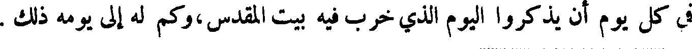
في كل يوم أن يذكروا اليوم الذي خرب فيه بيت المقدس،وكم له إلى يومه ذلك .
File: 000871.gt.txt (if the image is defective, simply delete all Arabic text and the line will be excluded)

السنن والقضاء ، فتعملوا بذلك في الأرض التي تصيرون إليها ، فاحتفظوا بأنفسكم
File: 000872.gt.txt (if the image is defective, simply delete all Arabic text and the line will be excluded)

ولا تصنعوا أصناما مما يشبه ذكرا ، و لا أنثى ، ولا شيئا مما يدب على الأرض
File: 000873.gt.txt (if the image is defective, simply delete all Arabic text and the line will be excluded)

و لا مما يكون في البحر ، و لا ترفعوا رؤوسكم إلى السماء فتعبدوا النجوم !
File: 000874.gt.txt (if the image is defective, simply delete all Arabic text and the line will be excluded)

إن الله قد أقسم لا أدخل الأرض الصالحة ، فأنا ميت بهذه الأرض ، ولست
File: 000875.gt.txt (if the image is defective, simply delete all Arabic text and the line will be excluded)

اعبر الأردن ، ولكنكم ستعبرون وتصيرون إلى الأرض الصالحة ، التي جعلها
File: 000876.gt.txt (if the image is defective, simply delete all Arabic text and the line will be excluded)

الله لكم ميراثا ، فلا تضلوا ميثاق الله ربكم الذي واثقكم به ، فتصنعوا الأصنام،
File: 000877.gt.txt (if the image is defective, simply delete all Arabic text and the line will be excluded)

و لا تعملوا أعمال السوء قدام ألهكم لو صرتم إلى الأرض الصالحة ، فتوشكوا ،
File: 000878.gt.txt (if the image is defective, simply delete all Arabic text and the line will be excluded)

أن عصيتم ، أن تهلكوا ، وتفرقوا بين الشعوب ، وان عبدتم ما تعمله أيدي البشر
File: 000879.gt.txt (if the image is defective, simply delete all Arabic text and the line will be excluded)

من خشب وحجارة لا يبصرون ، وتدعون ، فلا يسمع لكم دعاء ، أن الله
File: 000880.gt.txt (if the image is defective, simply delete all Arabic text and the line will be excluded)
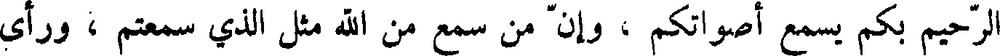
الرحيم بكم يسمع أصواتكم ، وان من سمع من الله مثل الذي سمعتم ، ورأى
File: 000881.gt.txt (if the image is defective, simply delete all Arabic text and the line will be excluded)
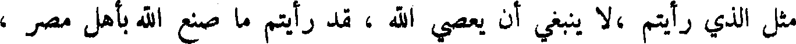
مثل الذي رايتم ،لا ينبغي أن يعصي الله ، قد رأيتم ما صنع الله بأهل مصر ،
File: 000882.gt.txt (if the image is defective, simply delete all Arabic text and the line will be excluded)

وأنتم تنظرون ، فان الله هو الرب الذي ليس غيره ، الذي بصركم ناره ،
File: 000883.gt.txt (if the image is defective, simply delete all Arabic text and the line will be excluded)

وأسمعكم صوته ، واحب آباءكم فاجتبى خلوفهم ، وأهلك لكم قوما كانوا
File: 000884.gt.txt (if the image is defective, simply delete all Arabic text and the line will be excluded)

اعظم واشد منكم ، وان الله سيدخلكم الأرض الصالحة ، ويجعلها ميراثا لكم ،
File: 000885.gt.txt (if the image is defective, simply delete all Arabic text and the line will be excluded)

فاحفظوا سننه التي أوصاكم بها وأمركم بها ليحسن إليكم والى خلفكم من
File: 000886.gt.txt (if the image is defective, simply delete all Arabic text and the line will be excluded)

بعدكم ، ويكثر أيامكم في الأرض ، اقبلوا وصية الله التي أمركم بها لا تزيغوا
File: 000887.gt.txt (if the image is defective, simply delete all Arabic text and the line will be excluded)

عنها يمينا و لا شمالا ، واسلكوا كل طريق أوصاكم بها ربكم ليحسن إليكم .
File: 000888.gt.txt (if the image is defective, simply delete all Arabic text and the line will be excluded)
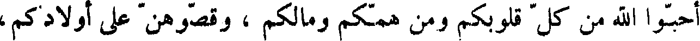
احبوا الله من كل قلوبكم ومن همكم ومالكم ، وقصوهن على أولادكم،
File: 000889.gt.txt (if the image is defective, simply delete all Arabic text and the line will be excluded)

وأتموها ، واتلوها في بيوتكم ، اجعلوها علامة بين أعينكم ، واكتبوها في
File: 000890.gt.txt (if the image is defective, simply delete all Arabic text and the line will be excluded)
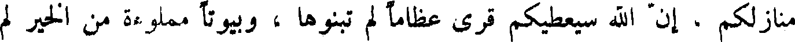
منازلكم ، أن الله سيعطيكم قرى عظاما لم تبنوها ، وبيوتا مملوءة من الخير لم
File: 000891.gt.txt (if the image is defective, simply delete all Arabic text and the line will be excluded)

تملأوها ، وآبارا مطوية لم تحفروها ، وكروما ، وزيتونا لم تغرسوها ، فلا تنسوا
File: 000892.gt.txt (if the image is defective, simply delete all Arabic text and the line will be excluded)

الله ، واخشوه ، واعبدوه ، واحلفوا باسمه ، ولا تتبعوا ألها آخر .
File: 000893.gt.txt (if the image is defective, simply delete all Arabic text and the line will be excluded)

احذروا غضب الله الذي يبيدكم عن وجه الأرض ، ولا تخونوا الله ، واقبلوا
File: 000894.gt.txt (if the image is defective, simply delete all Arabic text and the line will be excluded)

أمره ، واعملوا خيرا و صدقا .
File: 000895.gt.txt (if the image is defective, simply delete all Arabic text and the line will be excluded)
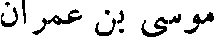
موسى بن عمران
File: 000896.gt.txt (if the image is defective, simply delete all Arabic text and the line will be excluded)

وولد موسى بن عمران بن قهث بن لاوي بن يعقوب بمصر في زمان فرعون
File: 000897.gt.txt (if the image is defective, simply delete all Arabic text and the line will be excluded)

الجبار ، وهو الوليد بن مصعب ، ويقال : كان اسمه ظلمي ، وبنو إسرائيل يومئذ
File: 000898.gt.txt (if the image is defective, simply delete all Arabic text and the line will be excluded)

بمصر قد أقاموا من زمان يوسف في الرق والعبودية .
File: 000899.gt.txt (if the image is defective, simply delete all Arabic text and the line will be excluded)

وكان سحرة فرعون وكهنته قد قالوا له : يولد في هذا الوقت مولود من بني
File: 000900.gt.txt (if the image is defective, simply delete all Arabic text and the line will be excluded)

إسرائيل يفسد عليك ملكك ، ويكون به هلاكك . وكان فرعون قد ملك مصر
File: 000901.gt.txt (if the image is defective, simply delete all Arabic text and the line will be excluded)

دهرا طويلا ممتعا بالسلامة ، حتى قال : أنا ربكم الأعلى ؛ فأمر فرعون ،
File: 000902.gt.txt (if the image is defective, simply delete all Arabic text and the line will be excluded)

فوضع على كل امرأة حامل من بني إسرائيل حرسا ، فكانت لا تلد منهن امرأة
File: 000903.gt.txt (if the image is defective, simply delete all Arabic text and the line will be excluded)

غلاما إلا قتل ولدها ، فلما جاء أم موسى المخاض قالت لها القابلة : أنيء اكتم
File: 000904.gt.txt (if the image is defective, simply delete all Arabic text and the line will be excluded)

عليك ! فلما ولدت قالت للحرس : إنما خرج منها دم .
File: 000905.gt.txt (if the image is defective, simply delete all Arabic text and the line will be excluded)

وأوحى الله إلى أم موسى أن أعلمي تابوتا ، ثم ضعيه فيه ، وأخرجيه ليلا ،
File: 000906.gt.txt (if the image is defective, simply delete all Arabic text and the line will be excluded)

فاطرحيه في نيل مصر ! ففعلت ذلك ، وضربته الريح ، فطرحته إلى الساحل ،
File: 000907.gt.txt (if the image is defective, simply delete all Arabic text and the line will be excluded)

فرأته امرأة فرعون ، فدنت منه حتى أخذته ، فلما فتحت التابوت ورأت موسى
File: 000908.gt.txt (if the image is defective, simply delete all Arabic text and the line will be excluded)

وقع عليه منها محبة ، فقالت لفرعون : نتخذه ولدا ، وطلبت له من ترضعه ،
File: 000909.gt.txt (if the image is defective, simply delete all Arabic text and the line will be excluded)

فلم يأخذ من المرضعات ، حتى جاءت أمه ، فأخذ منها ، وشب أحسن شباب ،
File: 000910.gt.txt (if the image is defective, simply delete all Arabic text and the line will be excluded)

وبلغ في أسرع وقت ما لا يبلغ الصبيان .
File: 000911.gt.txt (if the image is defective, simply delete all Arabic text and the line will be excluded)

وكان يوسف قد قال لبني إسرائيل : إنكم لن تزالوا في العذاب حتى يأتي
File: 000912.gt.txt (if the image is defective, simply delete all Arabic text and the line will be excluded)

غلام جعد ، من ولد لاوي بن يعقوب ، يقال له موسى بن عمران . فلما طال
File: 000913.gt.txt (if the image is defective, simply delete all Arabic text and the line will be excluded)

الأمر على بني إسرائيل ضجوا وأتوا شيخا منهم ، فقال لهم : كأنكم به !
File: 000914.gt.txt (if the image is defective, simply delete all Arabic text and the line will be excluded)

فبينا هم في ذلك إذ وقف عليهم موسى ، فلما رآه الشيخ عرفه بالصفة ، فقال له :
File: 000915.gt.txt (if the image is defective, simply delete all Arabic text and the line will be excluded)

ما اسمك ؟ فقال : موسى قال : ابن من ؟ قال : ابن عمران . فقام هو والقوم
File: 000916.gt.txt (if the image is defective, simply delete all Arabic text and the line will be excluded)

وفي زمانه ظهر السحر ، والكهانة ، والطيرة ، وذبح الناس أولادهم
File: 000917.gt.txt (if the image is defective, simply delete all Arabic text and the line will be excluded)

للشياطين ، وجعلت المكاييل والموازين .
File: 000918.gt.txt (if the image is defective, simply delete all Arabic text and the line will be excluded)

وكانت حياة ناحور مائة وثمانيا وأربعين سنة ، وكانت جبابرة ذلك العصر
File: 000919.gt.txt (if the image is defective, simply delete all Arabic text and the line will be excluded)

عاد بن عوص بن ارم بن سام بن نوح ، وكانوا قد انتشروا في البلاد ، وكانت
File: 000920.gt.txt (if the image is defective, simply delete all Arabic text and the line will be excluded)

منازلهم بين أعالي حضرموت إلى أودية نجران ، فلما عاثوا وعتوا بعث الله تبارك
File: 000921.gt.txt (if the image is defective, simply delete all Arabic text and the line will be excluded)

وتعالى هود بن عبد الله بن رباح بن الخلود بن عاد بن عوص بن ارم بن سام بن
File: 000922.gt.txt (if the image is defective, simply delete all Arabic text and the line will be excluded)

نوح ، فدعاهم إلى عبادة الله تعالى ، والعمل بطاعته ، اجتناب المحارم ،
File: 000923.gt.txt (if the image is defective, simply delete all Arabic text and the line will be excluded)

فكذبوه ، فقطع الله عنهم المطر ثلاث سنين ، فجهوا وفدا لهم إلى البيت
File: 000924.gt.txt (if the image is defective, simply delete all Arabic text and the line will be excluded)

الحرام يستسقي لهم ، فأقاموا يطوفون بالبيت ويسعون أربعون صباحا .
File: 000925.gt.txt (if the image is defective, simply delete all Arabic text and the line will be excluded)

ثم رفعت لهم سحابتان : إحداهما بيضاء فيها غيث ورحمة ، والأخرى
File: 000926.gt.txt (if the image is defective, simply delete all Arabic text and the line will be excluded)

سوداء فيها عذاب ونقمة ، وسمعوا صوتا يناديهم : اختاروا أيتهما شئتم !
File: 000927.gt.txt (if the image is defective, simply delete all Arabic text and the line will be excluded)

فقالوا : اخترنا السوداء ! فمرت ، وهي على روؤسهم ، فلما قربت من البلاد
File: 000928.gt.txt (if the image is defective, simply delete all Arabic text and the line will be excluded)

قال لهم هود : أن هذه السحابة فيها عذاب قد أظلكم ! فقالوا : بل هو عارض
File: 000929.gt.txt (if the image is defective, simply delete all Arabic text and the line will be excluded)

ممطرنا ، فأقبلت ريح سوداء لأتمر بشيء إلا أحرقته ، فما نجا منهم إلا هود ،
File: 000930.gt.txt (if the image is defective, simply delete all Arabic text and the line will be excluded)

ويقال انه نجا لقمان بن عاد ، وعاش حتى عمر عمر سبعة نسور .
File: 000931.gt.txt (if the image is defective, simply delete all Arabic text and the line will be excluded)

ولما مضت عاد صار في ديارهم بنو ثمود بن جازر بن ثمود بن ارم بن سام
File: 000932.gt.txt (if the image is defective, simply delete all Arabic text and the line will be excluded)

ابن نوح ، وكانت ملوكهم تنزل الحجر ، فلما عتوا بعث الله إليهم صالح بن
File: 000933.gt.txt (if the image is defective, simply delete all Arabic text and the line will be excluded)

تالح بن صادوق بن هود نبيا ، فأسألوه أن يأتيهم بآية ، فأخرج الله لهم ناقة من
File: 000934.gt.txt (if the image is defective, simply delete all Arabic text and the line will be excluded)

الأرض معها فصيلها ، فقال لهم صالح : أن لهذه الناقة يوما ترد فيه الماء ، ولكم
File: 000935.gt.txt (if the image is defective, simply delete all Arabic text and the line will be excluded)

يوما ، فاحذروا أن تصدوها عن الماء ! فكذبوه ، فقام رجل منهم يقال له
File: 000936.gt.txt (if the image is defective, simply delete all Arabic text and the line will be excluded)

قدار ، فعقرها وضرب عرقوبها بالسيف ، فارتفع فصيلها على نشز من الأرض ،
File: 000937.gt.txt (if the image is defective, simply delete all Arabic text and the line will be excluded)

ثم رغا ، فبعث الله عليهم العذاب ، فما فلت منهم إلا امرأة يقال لها الذريعة ،
File: 000938.gt.txt (if the image is defective, simply delete all Arabic text and the line will be excluded)

وضرب العرب بقدار المثل .
File: 000939.gt.txt (if the image is defective, simply delete all Arabic text and the line will be excluded)

الجودي في المحرم ، فصار أول الشهور يعده ، وأهل الكتاب يخالفون في هذا .
File: 000940.gt.txt (if the image is defective, simply delete all Arabic text and the line will be excluded)

ولما استوت على الجودي ، وهو جبل بناحية الموصل ، أمر الله تعالى ماء السماء
File: 000941.gt.txt (if the image is defective, simply delete all Arabic text and the line will be excluded)

فرجع من حيث جاء ، وأمر الأرض فبلعت ماءها ، فأقام نوح بعد وقوف السفينة
File: 000942.gt.txt (if the image is defective, simply delete all Arabic text and the line will be excluded)

أربعة اشهر ثم بعث الغراب ليعرف خبر الماء فوجد الجيف طافية على الماء
File: 000943.gt.txt (if the image is defective, simply delete all Arabic text and the line will be excluded)

فوقع عليها ولم يرجع ، ثم أرسل الحمامة ، فجاءت بورقة زيتون ، فعلم أن الماء
File: 000944.gt.txt (if the image is defective, simply delete all Arabic text and the line will be excluded)

قد ذهب ، فخرج لسبع وعشرين ومن أيار ، فكا بين دخوله السفينة وخروجه ،
File: 000945.gt.txt (if the image is defective, simply delete all Arabic text and the line will be excluded)

سنة كاملة وعشرة أيام ، فلما صار إلى الأرض هو وأهله بنوا مدينة ، فسموها
File: 000946.gt.txt (if the image is defective, simply delete all Arabic text and the line will be excluded)

ثمانين .
File: 000947.gt.txt (if the image is defective, simply delete all Arabic text and the line will be excluded)

ولما خرج نوح من السفينة ورأى عظام الناس تلوح غمه ذلك وأحزنه،وأوحى
File: 000948.gt.txt (if the image is defective, simply delete all Arabic text and the line will be excluded)

الله إليه : إني لن أرسل الطوفان على الأرض بعدها أبدا . ولما خرج نوح من
File: 000949.gt.txt (if the image is defective, simply delete all Arabic text and the line will be excluded)

السفينة أقفلها بقفل ودفع المفتاح إلى سام ابنه ، ثم زرع نوح ، وغرس كرما ،
File: 000950.gt.txt (if the image is defective, simply delete all Arabic text and the line will be excluded)

وعمر الأرض .
File: 000951.gt.txt (if the image is defective, simply delete all Arabic text and the line will be excluded)

وان نوحا يوما لنائم إذ انكشف ثوبه ، فرأى حام ابنه سوأته ، فضحك ،
File: 000952.gt.txt (if the image is defective, simply delete all Arabic text and the line will be excluded)

وخبر أخويه ساما ويافتا ، فأخذا ثوبا حتى أتياه به ، ووجوههما مصروفة عنه ،
File: 000953.gt.txt (if the image is defective, simply delete all Arabic text and the line will be excluded)

فألقياه الثوب عليه ، فلما انتبه نوح من نومه ، وعلم الخبر ، دعا على كنعان بن
File: 000954.gt.txt (if the image is defective, simply delete all Arabic text and the line will be excluded)
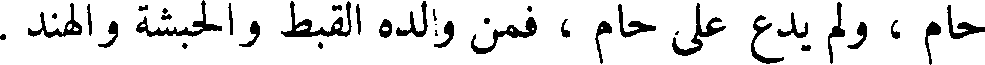
حام ، ولم يدع على حام ، فمن ولده القبط والحبشة والهند .
File: 000955.gt.txt (if the image is defective, simply delete all Arabic text and the line will be excluded)

وكان كنعان أول من رجع من ولد نوح إلى عمل بني قابيل ، فعمل الملاهي
File: 000956.gt.txt (if the image is defective, simply delete all Arabic text and the line will be excluded)

والغناء والمزامير والطبول والبرابط والصنوج ، أطاع الشيطان في اللعب والباطل .
File: 000957.gt.txt (if the image is defective, simply delete all Arabic text and the line will be excluded)

وقسم نوح الأرض بين ولده ، فجعل لسام وسط الأرض ، والحرم وما
File: 000958.gt.txt (if the image is defective, simply delete all Arabic text and the line will be excluded)

حوله ، واليمن وحضرموت ، إلى عمان ، إلى البحرين ، إلى عالج ويبرين ،
File: 000959.gt.txt (if the image is defective, simply delete all Arabic text and the line will be excluded)

ووبار ، والدو والدهناء ، وجعل لحام أرض المغرب والسواحل ، فولد كوش
File: 000960.gt.txt (if the image is defective, simply delete all Arabic text and the line will be excluded)

ابن حام ، وكنعان بن حام النوبة والزنج والحبشة .
File: 000961.gt.txt (if the image is defective, simply delete all Arabic text and the line will be excluded)

ونزل يافث بن نوح ما بين المشرق والمغرب ، فولد له جومر ،وتوبل ، وماش ،
File: 000962.gt.txt (if the image is defective, simply delete all Arabic text and the line will be excluded)

وماشج ، ومأجوج ، فولد جومر الصقالبه ، وولد توبل برجان ، وولد ماش
File: 000963.gt.txt (if the image is defective, simply delete all Arabic text and the line will be excluded)
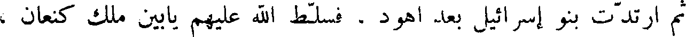
ثم ارتدت بنو إسرائيل بعد أهود . فسلط الله عليهم يابين ملك كنعان ،
File: 000964.gt.txt (if the image is defective, simply delete all Arabic text and the line will be excluded)

عشرين سنة ، وكان سمحر بن عانات قد ملك على بني إسرائيل قبل ، فقتل من
File: 000965.gt.txt (if the image is defective, simply delete all Arabic text and the line will be excluded)

أهل فلسطين ستمائة رجل ، ثم إن الله رحمهم ، فبعث إليهم رجلا يقال له
File: 000966.gt.txt (if the image is defective, simply delete all Arabic text and the line will be excluded)

بأرق بن ابينعم ، من سبط نفتالي ، فملكهم أربعين سنة .
File: 000967.gt.txt (if the image is defective, simply delete all Arabic text and the line will be excluded)

ثم ارتدت بنو إسرائيل إلى الكفر ،فسلط الله عليهم أهل مدين سبع سنين ،
File: 000968.gt.txt (if the image is defective, simply delete all Arabic text and the line will be excluded)
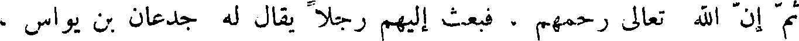
ثم إن الله تعالى رحمهم ، فبعث إليهم رجلا يقال له جدعان بن يواس ،
File: 000969.gt.txt (if the image is defective, simply delete all Arabic text and the line will be excluded)

من سبط منشى ، وكان ابن صالحا . وهو الذي بيت أهل مدين ، فقتل منهم مائتي
File: 000970.gt.txt (if the image is defective, simply delete all Arabic text and the line will be excluded)

ألف وخمسة وثمانين ألفا ، وملكهم أربعين سنة ، ثم ملك بعده ابنه ابيملك بن
File: 000971.gt.txt (if the image is defective, simply delete all Arabic text and the line will be excluded)

جدعون ، وكان ابن سوء ، وهو الذي قتل سبعين أخا كانوا له ، فقتلته امرأة ،
File: 000972.gt.txt (if the image is defective, simply delete all Arabic text and the line will be excluded)

ورمته بحجر من فوق باب المدينة ، فشدخته ، وكان ملكه ثلاث سنين .
File: 000973.gt.txt (if the image is defective, simply delete all Arabic text and the line will be excluded)

ثم ملك تالع بن فواي ، من سبط يشاجر ، فأقام ثلاثا وعشرين سنة ،
File: 000974.gt.txt (if the image is defective, simply delete all Arabic text and the line will be excluded)

ثم ملك جلعاد من سبط منشى ، وكان له ثلاثون ابنا يركبون معه على ثلاثين
File: 000975.gt.txt (if the image is defective, simply delete all Arabic text and the line will be excluded)
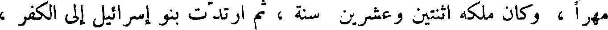
مهرا ، وكان ملكه اثنين وعشرين سنة ، ثم ارتدت بنو إسرائيل إلى الكفر ،
File: 000976.gt.txt (if the image is defective, simply delete all Arabic text and the line will be excluded)

فسلط الله علهم بني عمون ، سبع عشرة سنة ، وفي زمانه بنيت مدينة صور
File: 000977.gt.txt (if the image is defective, simply delete all Arabic text and the line will be excluded)

بالشأم ، وسامهم سوء العذاب .
File: 000978.gt.txt (if the image is defective, simply delete all Arabic text and the line will be excluded)

ثم إن الله تعالى رحمهم ، فبعث لهم رجلا من أهل جلعاد اسمه يفتح ،
File: 000979.gt.txt (if the image is defective, simply delete all Arabic text and the line will be excluded)

فقتل من بني إسرائيل من آل افرائيم اثنين وأربعين ألفا ، وكان من سبط منشى ،
File: 000980.gt.txt (if the image is defective, simply delete all Arabic text and the line will be excluded)

وكان ملكه ست سنين ، ثم كان عليهم ابيصان الذي يدعى نخشون ، سبع سنين ،
File: 000981.gt.txt (if the image is defective, simply delete all Arabic text and the line will be excluded)

ثم كان عليهم ايلان . من سبط زبولون ، عشرين سنة ، ثم كان عليهم عكران
File: 000982.gt.txt (if the image is defective, simply delete all Arabic text and the line will be excluded)
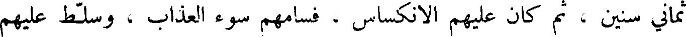
ثماني سنين ، ثم كان عليهم الانكساس ، فسامهم سوء العذاب ، وسلط عليهم
File: 000983.gt.txt (if the image is defective, simply delete all Arabic text and the line will be excluded)

اشد التسليط ، أربعين سنة ، ثم كان عليهم شمسون عشرين سنة ، ثم لبثوا ليس
File: 000984.gt.txt (if the image is defective, simply delete all Arabic text and the line will be excluded)

عليهم أحد اثنتي عشرة سنة ، ثم كان عليهم عالي الاحباري أربعين سنة .
File: 000985.gt.txt (if the image is defective, simply delete all Arabic text and the line will be excluded)

ثم كان عليهم شمويل النبي ، وهو الذي ذكره الله تعالى إذ قالوا لنبي
File: 000986.gt.txt (if the image is defective, simply delete all Arabic text and the line will be excluded)

لهم ابعث لنا ملكا نقاتل في سبيل الله ، فلما قالوا لشمويل النبي : سل الله أن
File: 000987.gt.txt (if the image is defective, simply delete all Arabic text and the line will be excluded)

عابر بن شالح
File: 000988.gt.txt (if the image is defective, simply delete all Arabic text and the line will be excluded)

ثم قام عابر بن شالح يدعوا قومه إلى طاعة الله تعالى ، ويحذر بني سام بن
File: 000989.gt.txt (if the image is defective, simply delete all Arabic text and the line will be excluded)

نوح أن يختلطوا بولد كنعان بن حام ، المغير دين آبائه ، والمرتكب للمعاصي .
File: 000990.gt.txt (if the image is defective, simply delete all Arabic text and the line will be excluded)
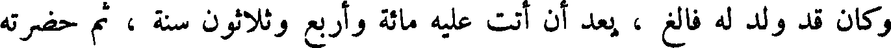
وكان قد ولد له فالغ ، بعد أن أتت عليه مائة وأربع وثلاثون سنة ، ثم حضرته
File: 000991.gt.txt (if the image is defective, simply delete all Arabic text and the line will be excluded)

الوفاة ، فأوصى إلى ابنه فالغ ، فقال له : يا بني ! إن ولد قابيل اللعين ، لما
File: 000992.gt.txt (if the image is defective, simply delete all Arabic text and the line will be excluded)

اكثروا العمل بمعاصي الله ، سبحانه وتعالى ، ودخل معهم ولد شيث بعث الله
File: 000993.gt.txt (if the image is defective, simply delete all Arabic text and the line will be excluded)
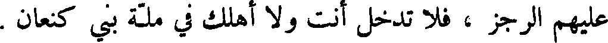
عليهم الرجز ، فلا تدخل أنت ولا أهلك في ملة بني كنعان .
File: 000994.gt.txt (if the image is defective, simply delete all Arabic text and the line will be excluded)

ومات عابر يوم الخميس لثلاث وعشرين من تشرين الأول ، وكانت حياته
File: 000995.gt.txt (if the image is defective, simply delete all Arabic text and the line will be excluded)

ثلاثمائة وأربعين سنة ، وقيل مائة أربعا وستين سنة .
File: 000996.gt.txt (if the image is defective, simply delete all Arabic text and the line will be excluded)

فالغ بن عابر
File: 000997.gt.txt (if the image is defective, simply delete all Arabic text and the line will be excluded)

ثم قام بعد عابر فالغ ابنه يدعوا الناس إلى طاعة الله تعالى ، فكان في زمانه
File: 000998.gt.txt (if the image is defective, simply delete all Arabic text and the line will be excluded)

اجتماع ولد نوح ببابل ، وذلك أن ماش بن ارم بن سام بن نوح صار إلى ارض
File: 000999.gt.txt (if the image is defective, simply delete all Arabic text and the line will be excluded)
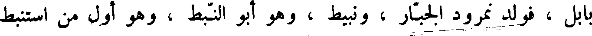
بابل ، فولد نمرود الجبار ، ونبيط ، وهو أبو النبط ، وهو أول من استنبط